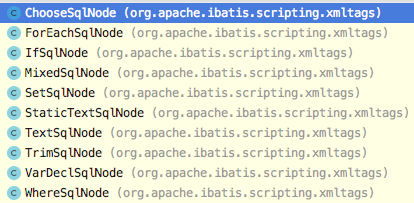
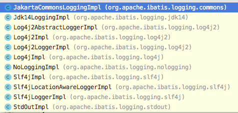

<!DOCTYPE HTML>
<html lang="zh-hans" >
    <head>
        <meta charset="UTF-8">
        <meta content="text/html; charset=utf-8" http-equiv="Content-Type">
        <title>89 | 开源实战五（下）：MyBatis设计模式总结 · 设计模式之美</title>
        <meta http-equiv="X-UA-Compatible" content="IE=edge" />
        <meta name="description" content="">
        <meta name="generator" content="GitBook 3.2.3">
        <meta name="author" content="zzturn">
        
        
    
    
    <link rel="stylesheet" href="../gitbook/style.css">

    
            
                
                <link rel="stylesheet" href="../gitbook/gitbook-plugin-code/plugin.css">
                
            
                
                <link rel="stylesheet" href="../gitbook/gitbook-plugin-prism/prism-coldark-cold.css">
                
            
                
                <link rel="stylesheet" href="../gitbook/gitbook-plugin-search-pro-fixed/search.css">
                
            
                
                <link rel="stylesheet" href="../gitbook/gitbook-plugin-back-to-top-button/plugin.css">
                
            
                
                <link rel="stylesheet" href="../gitbook/gitbook-plugin-mermaid-gb3/mermaid/mermaid.css">
                
            
                
                <link rel="stylesheet" href="../gitbook/gitbook-plugin-expandable-chapters-small/expandable-chapters-small.css">
                
            
                
                <link rel="stylesheet" href="../gitbook/gitbook-plugin-splitter/splitter.css">
                
            
                
                <link rel="stylesheet" href="../gitbook/gitbook-plugin-fontsettings/website.css">
                
            
                
                <link rel="stylesheet" href="../gitbook/gitbook-plugin-theme-d4t/style.css">
                
            
        

    

    
        
    
        
    
        
    
        
    
        
    
        
    


    

        
    
    
    <meta name="HandheldFriendly" content="true"/>
    <meta name="viewport" content="width=device-width, initial-scale=1, user-scalable=no">
    <meta name="apple-mobile-web-app-capable" content="yes">
    <meta name="apple-mobile-web-app-status-bar-style" content="black">
    <link rel="apple-touch-icon-precomposed" sizes="152x152" href="../gitbook/images/apple-touch-icon-precomposed-152.png">
    <link rel="shortcut icon" href="../gitbook/images/favicon.ico" type="image/x-icon">

    
    <link rel="next" href="242314.html" />
    
    
    <link rel="prev" href="240147.html" />
    

    </head>
    <body>
        
<div class="book">
    <div class="header-inner">
        <!-- LOGO -->
        <a href="/"><div class="logo"></div></a>
        <span class="title"></span>

        <!-- Search -->
        
<div id="book-search-input" role="search">
    <input type="text" placeholder="输入并搜索" />
</div>


        <!-- Nav -->
        <ul class="header-nav">
            <li>
                <a href="../book_10x_cheng_xu_yuan_gong_zuo_fa/" target="_self">10x程序员工作法</a>
            </li><li>
                <a href="../book_ddd_shi_zhan_ke/" target="_self">DDD实战课</a>
            </li><li>
                <a href="../book_da_chang_jin_sheng_zhi_nan/" target="_self">大厂晋升指南</a>
            </li><li>
                <a href="https://github.com/auohh/" target="_blank">Github</a>
            </li>
        </ul>
    </div>

    <div class="book-summary">
        <div class="sidebar-nav-space"></div>
        
        
        <nav role="navigation">
            


<ul class="summary">
    
    

    

    
        
        
    
        <li class="chapter " data-level="1.1" data-path="../">
            
                <a href="../">
            
                    
                    简介
            
                </a>
            

            
        </li>
    

    
        
        <li class="header">开篇词</li>
        
        
    
        <li class="chapter " data-level="2.1" data-path="160463.html">
            
                <a href="160463.html">
            
                    
                    开篇词 | 一对一的设计与编码集训，让你告别没有成长的烂代码！
            
                </a>
            

            
        </li>
    

    
        
        <li class="header">设计模式学习导读</li>
        
        
    
        <li class="chapter " data-level="3.1" data-path="160981.html">
            
                <a href="160981.html">
            
                    
                    01 | 为什么说每个程序员都要尽早地学习并掌握设计模式相关知识？
            
                </a>
            

            
        </li>
    
        <li class="chapter " data-level="3.2" data-path="160985.html">
            
                <a href="160985.html">
            
                    
                    02 | 从哪些维度评判代码质量的好坏？如何具备写出高质量代码的能力？
            
                </a>
            

            
        </li>
    
        <li class="chapter " data-level="3.3" data-path="160991.html">
            
                <a href="160991.html">
            
                    
                    03 | 面向对象、设计原则、设计模式、编程规范、重构，这五者有何关系？
            
                </a>
            

            
        </li>
    

    
        
        <li class="header">设计原则与思想</li>
        
        
    

    
        
        <li class="header">面向对象</li>
        
        
    
        <li class="chapter " data-level="5.1" data-path="161575.html">
            
                <a href="161575.html">
            
                    
                    04 | 理论一：当谈论面向对象的时候，我们到底在谈论什么？
            
                </a>
            

            
        </li>
    
        <li class="chapter " data-level="5.2" data-path="161114.html">
            
                <a href="161114.html">
            
                    
                    05 | 理论二：封装、抽象、继承、多态分别可以解决哪些编程问题？
            
                </a>
            

            
        </li>
    
        <li class="chapter " data-level="5.3" data-path="161587.html">
            
                <a href="161587.html">
            
                    
                    06 | 理论三：面向对象相比面向过程有哪些优势？面向过程真的过时了吗？
            
                </a>
            

            
        </li>
    
        <li class="chapter " data-level="5.4" data-path="164907.html">
            
                <a href="164907.html">
            
                    
                    07 | 理论四：哪些代码设计看似是面向对象，实际是面向过程的？
            
                </a>
            

            
        </li>
    
        <li class="chapter " data-level="5.5" data-path="165103.html">
            
                <a href="165103.html">
            
                    
                    08 | 理论五：接口vs抽象类的区别？如何用普通的类模拟抽象类和接口？
            
                </a>
            

            
        </li>
    
        <li class="chapter " data-level="5.6" data-path="165114.html">
            
                <a href="165114.html">
            
                    
                    09 | 理论六：为什么基于接口而非实现编程？有必要为每个类都定义接口吗？
            
                </a>
            

            
        </li>
    
        <li class="chapter " data-level="5.7" data-path="169593.html">
            
                <a href="169593.html">
            
                    
                    10 | 理论七：为何说要多用组合少用继承？如何决定该用组合还是继承？
            
                </a>
            

            
        </li>
    
        <li class="chapter " data-level="5.8" data-path="169600.html">
            
                <a href="169600.html">
            
                    
                    11 | 实战一（上）：业务开发常用的基于贫血模型的MVC架构违背OOP吗？
            
                </a>
            

            
        </li>
    
        <li class="chapter " data-level="5.9" data-path="169631.html">
            
                <a href="169631.html">
            
                    
                    12 | 实战一（下）：如何利用基于充血模型的DDD开发一个虚拟钱包系统？
            
                </a>
            

            
        </li>
    
        <li class="chapter " data-level="5.10" data-path="171760.html">
            
                <a href="171760.html">
            
                    
                    13 | 实战二（上）：如何对接口鉴权这样一个功能开发做面向对象分析？
            
                </a>
            

            
        </li>
    
        <li class="chapter " data-level="5.11" data-path="171767.html">
            
                <a href="171767.html">
            
                    
                    14 | 实战二（下）：如何利用面向对象设计和编程开发接口鉴权功能？
            
                </a>
            

            
        </li>
    

    
        
        <li class="header">设计原则</li>
        
        
    
        <li class="chapter " data-level="6.1" data-path="171771.html">
            
                <a href="171771.html">
            
                    
                    15 | 单一职责原则：如何判定某个类的职责是否够“单一”？
            
                </a>
            

            
        </li>
    
        <li class="chapter " data-level="6.2" data-path="176075.html">
            
                <a href="176075.html">
            
                    
                    16 | 开闭原则：如何做到“对扩展开放、修改关闭”？
            
                </a>
            

            
        </li>
    
        <li class="chapter " data-level="6.3" data-path="177110.html">
            
                <a href="177110.html">
            
                    
                    17 | 里式替换原则：LSP跟多态有何区别？哪些代码违背了LSP？
            
                </a>
            

            
        </li>
    
        <li class="chapter " data-level="6.4" data-path="177442.html">
            
                <a href="177442.html">
            
                    
                    18 | 接口隔离原则：有哪三种应用？“接口”该如何理解？
            
                </a>
            

            
        </li>
    
        <li class="chapter " data-level="6.5" data-path="177444.html">
            
                <a href="177444.html">
            
                    
                    19 | 依赖反转原则：控制反转、依赖反转、依赖注入的区别和联系
            
                </a>
            

            
        </li>
    
        <li class="chapter " data-level="6.6" data-path="177448.html">
            
                <a href="177448.html">
            
                    
                    20 | KISS、YAGNI原则：看似简单，却经常被用错
            
                </a>
            

            
        </li>
    
        <li class="chapter " data-level="6.7" data-path="179607.html">
            
                <a href="179607.html">
            
                    
                    21 | DRY原则：重复的代码就一定违背DRY吗？如何提高代码的复用性？
            
                </a>
            

            
        </li>
    
        <li class="chapter " data-level="6.8" data-path="179615.html">
            
                <a href="179615.html">
            
                    
                    22 | 迪米特法则（LOD）：如何实现“高内聚、松耦合”？
            
                </a>
            

            
        </li>
    
        <li class="chapter " data-level="6.9" data-path="182001.html">
            
                <a href="182001.html">
            
                    
                    23 | 实战一（上）：业务系统的需求分析和设计
            
                </a>
            

            
        </li>
    
        <li class="chapter " data-level="6.10" data-path="183007.html">
            
                <a href="183007.html">
            
                    
                    24 | 实战一（下）：实现一个遵从设计原则的积分兑换系统
            
                </a>
            

            
        </li>
    
        <li class="chapter " data-level="6.11" data-path="179644.html">
            
                <a href="179644.html">
            
                    
                    25 | 实战二（上）：通用框架开发的需求分析和设计
            
                </a>
            

            
        </li>
    
        <li class="chapter " data-level="6.12" data-path="179673.html">
            
                <a href="179673.html">
            
                    
                    26 | 实战二（下）：实现支持各种统计规则的性能计数器
            
                </a>
            

            
        </li>
    

    
        
        <li class="header">规范与重构</li>
        
        
    
        <li class="chapter " data-level="7.1" data-path="179679.html">
            
                <a href="179679.html">
            
                    
                    27 | 什么情况下要重构？如何重构？
            
                </a>
            

            
        </li>
    
        <li class="chapter " data-level="7.2" data-path="185684.html">
            
                <a href="185684.html">
            
                    
                    28 | 保证重构不出错的技术手段
            
                </a>
            

            
        </li>
    
        <li class="chapter " data-level="7.3" data-path="186691.html">
            
                <a href="186691.html">
            
                    
                    29 | 代码的可测试性：如何写出可测试性好的代码？
            
                </a>
            

            
        </li>
    
        <li class="chapter " data-level="7.4" data-path="187761.html">
            
                <a href="187761.html">
            
                    
                    30 | 解耦代码的技术：封装、抽象、模块化、中间层
            
                </a>
            

            
        </li>
    
        <li class="chapter " data-level="7.5" data-path="188622.html">
            
                <a href="188622.html">
            
                    
                    31 | 编程规范（上）：改善代码质量的20条建议
            
                </a>
            

            
        </li>
    
        <li class="chapter " data-level="7.6" data-path="188857.html">
            
                <a href="188857.html">
            
                    
                    32 | 编程规范（中）：改善代码质量的20条建议
            
                </a>
            

            
        </li>
    
        <li class="chapter " data-level="7.7" data-path="188882.html">
            
                <a href="188882.html">
            
                    
                    33 | 编程规范（下）：改善代码质量的20条建议
            
                </a>
            

            
        </li>
    
        <li class="chapter " data-level="7.8" data-path="190979.html">
            
                <a href="190979.html">
            
                    
                    34 | 实战一（上）：ID生成器代码质量问题分析
            
                </a>
            

            
        </li>
    
        <li class="chapter " data-level="7.9" data-path="191621.html">
            
                <a href="191621.html">
            
                    
                    35 | 实战一（下）：ID生成器代码重构实战
            
                </a>
            

            
        </li>
    
        <li class="chapter " data-level="7.10" data-path="191642.html">
            
                <a href="191642.html">
            
                    
                    36 | 实战二（上）：程序出错该返回啥？NULL、异常、错误码、空对象？
            
                </a>
            

            
        </li>
    
        <li class="chapter " data-level="7.11" data-path="191647.html">
            
                <a href="191647.html">
            
                    
                    37 | 实战二（下）：重构ID生成器项目中各函数的异常处理代码
            
                </a>
            

            
        </li>
    

    
        
        <li class="header">总结课</li>
        
        
    
        <li class="chapter " data-level="8.1" data-path="193093.html">
            
                <a href="193093.html">
            
                    
                    38 | 总结回顾面向对象、设计原则、编程规范、重构技巧等知识点
            
                </a>
            

            
        </li>
    
        <li class="chapter " data-level="8.2" data-path="193221.html">
            
                <a href="193221.html">
            
                    
                    39 | 完善性能计数器项目（上）
            
                </a>
            

            
        </li>
    
        <li class="chapter " data-level="8.3" data-path="193555.html">
            
                <a href="193555.html">
            
                    
                    40 | 完善性能计数器项目（下）
            
                </a>
            

            
        </li>
    

    
        
        <li class="header">设计模式与范式</li>
        
        
    

    
        
        <li class="header">创建型模式</li>
        
        
    
        <li class="chapter " data-level="10.1" data-path="194035.html">
            
                <a href="194035.html">
            
                    
                    41 | 单例模式（上）：懒加载与饿汉式
            
                </a>
            

            
        </li>
    
        <li class="chapter " data-level="10.2" data-path="194068.html">
            
                <a href="194068.html">
            
                    
                    42 | 单例模式（中）：不推荐单例模式及替代方案
            
                </a>
            

            
        </li>
    
        <li class="chapter " data-level="10.3" data-path="196790.html">
            
                <a href="196790.html">
            
                    
                    43 | 单例模式（下）：分布式单例模式设计
            
                </a>
            

            
        </li>
    
        <li class="chapter " data-level="10.4" data-path="197254.html">
            
                <a href="197254.html">
            
                    
                    44 | 工厂模式（上）：工厂模式的适用场景
            
                </a>
            

            
        </li>
    
        <li class="chapter " data-level="10.5" data-path="198614.html">
            
                <a href="198614.html">
            
                    
                    45 | 工厂模式（下）：实现Dependency Injection框架
            
                </a>
            

            
        </li>
    
        <li class="chapter " data-level="10.6" data-path="199674.html">
            
                <a href="199674.html">
            
                    
                    46 | 建造者模式：对象创建方式详解
            
                </a>
            

            
        </li>
    
        <li class="chapter " data-level="10.7" data-path="200786.html">
            
                <a href="200786.html">
            
                    
                    47 | 原型模式：clone一个HashMap
            
                </a>
            

            
        </li>
    

    
        
        <li class="header">结构型模式</li>
        
        
    
        <li class="chapter " data-level="11.1" data-path="201823.html">
            
                <a href="201823.html">
            
                    
                    48 | 代理模式：在RPC、缓存、监控中的应用
            
                </a>
            

            
        </li>
    
        <li class="chapter " data-level="11.2" data-path="202786.html">
            
                <a href="202786.html">
            
                    
                    49 | 桥接模式：消息推送系统设计
            
                </a>
            

            
        </li>
    
        <li class="chapter " data-level="11.3" data-path="204845.html">
            
                <a href="204845.html">
            
                    
                    50 | 装饰器模式：Java IO源码剖析
            
                </a>
            

            
        </li>
    
        <li class="chapter " data-level="11.4" data-path="205912.html">
            
                <a href="205912.html">
            
                    
                    51 | 适配器模式：与代理、桥接、装饰的区别
            
                </a>
            

            
        </li>
    
        <li class="chapter " data-level="11.5" data-path="206409.html">
            
                <a href="206409.html">
            
                    
                    52 | 门面模式：接口粒度设计
            
                </a>
            

            
        </li>
    
        <li class="chapter " data-level="11.6" data-path="207456.html">
            
                <a href="207456.html">
            
                    
                    53 | 组合模式：文件系统目录树结构
            
                </a>
            

            
        </li>
    
        <li class="chapter " data-level="11.7" data-path="208572.html">
            
                <a href="208572.html">
            
                    
                    54 | 享元模式（上）：文本编辑器内存优化
            
                </a>
            

            
        </li>
    
        <li class="chapter " data-level="11.8" data-path="209343.html">
            
                <a href="209343.html">
            
                    
                    55 | 享元模式（下）：Java Integer、String中的应用
            
                </a>
            

            
        </li>
    

    
        
        <li class="header">行为型模式</li>
        
        
    
        <li class="chapter " data-level="12.1" data-path="210170.html">
            
                <a href="210170.html">
            
                    
                    56 | 观察者模式（上）：多种实现方式
            
                </a>
            

            
        </li>
    
        <li class="chapter " data-level="12.2" data-path="211239.html">
            
                <a href="211239.html">
            
                    
                    57 | 观察者模式（下）：异步非阻塞EventBus框架
            
                </a>
            

            
        </li>
    
        <li class="chapter " data-level="12.3" data-path="212049.html">
            
                <a href="212049.html">
            
                    
                    58 | 模板模式（上）：JDK、Servlet、JUnit中的应用
            
                </a>
            

            
        </li>
    
        <li class="chapter " data-level="12.4" data-path="212802.html">
            
                <a href="212802.html">
            
                    
                    59 | 模板模式（下）：模板模式与Callback的关系
            
                </a>
            

            
        </li>
    
        <li class="chapter " data-level="12.5" data-path="214014.html">
            
                <a href="214014.html">
            
                    
                    60 | 策略模式（上）：避免冗长分支判断
            
                </a>
            

            
        </li>
    
        <li class="chapter " data-level="12.6" data-path="215132.html">
            
                <a href="215132.html">
            
                    
                    61 | 策略模式（下）：文件排序小程序
            
                </a>
            

            
        </li>
    
        <li class="chapter " data-level="12.7" data-path="216278.html">
            
                <a href="216278.html">
            
                    
                    62 | 职责链模式（上）：敏感信息过滤框架
            
                </a>
            

            
        </li>
    
        <li class="chapter " data-level="12.8" data-path="217395.html">
            
                <a href="217395.html">
            
                    
                    63 | 职责链模式（下）：过滤器、拦截器实现
            
                </a>
            

            
        </li>
    
        <li class="chapter " data-level="12.9" data-path="218375.html">
            
                <a href="218375.html">
            
                    
                    64 | 状态模式：状态机实现
            
                </a>
            

            
        </li>
    
        <li class="chapter " data-level="12.10" data-path="219290.html">
            
                <a href="219290.html">
            
                    
                    65 | 迭代器模式（上）：迭代器的优势
            
                </a>
            

            
        </li>
    
        <li class="chapter " data-level="12.11" data-path="219964.html">
            
                <a href="219964.html">
            
                    
                    66 | 迭代器模式（中）：遍历与集合修改
            
                </a>
            

            
        </li>
    
        <li class="chapter " data-level="12.12" data-path="221269.html">
            
                <a href="221269.html">
            
                    
                    67 | 迭代器模式（下）：快照功能实现
            
                </a>
            

            
        </li>
    
        <li class="chapter " data-level="12.13" data-path="221852.html">
            
                <a href="221852.html">
            
                    
                    68 | 访问者模式（上）：模式诞生思维过程
            
                </a>
            

            
        </li>
    
        <li class="chapter " data-level="12.14" data-path="222762.html">
            
                <a href="222762.html">
            
                    
                    69 | 访问者模式（下）：双分派语言与访问者模式
            
                </a>
            

            
        </li>
    
        <li class="chapter " data-level="12.15" data-path="223947.html">
            
                <a href="223947.html">
            
                    
                    70 | 备忘录模式：大对象的备份与恢复
            
                </a>
            

            
        </li>
    
        <li class="chapter " data-level="12.16" data-path="224549.html">
            
                <a href="224549.html">
            
                    
                    71 | 命令模式：手游后端架构设计
            
                </a>
            

            
        </li>
    
        <li class="chapter " data-level="12.17" data-path="225904.html">
            
                <a href="225904.html">
            
                    
                    72 | 解释器模式：自定义告警规则
            
                </a>
            

            
        </li>
    
        <li class="chapter " data-level="12.18" data-path="226710.html">
            
                <a href="226710.html">
            
                    
                    73 | 中介模式：中介与观察者的区别
            
                </a>
            

            
        </li>
    

    
        
        <li class="header">总结课</li>
        
        
    
        <li class="chapter " data-level="13.1" data-path="227452.html">
            
                <a href="227452.html">
            
                    
                    74 | 23种经典设计模式总结
            
                </a>
            

            
        </li>
    
        <li class="chapter " data-level="13.2" data-path="229157.html">
            
                <a href="229157.html">
            
                    
                    75 | 如何避免过度设计与设计不足
            
                </a>
            

            
        </li>
    

    
        
        <li class="header">开源与项目实战</li>
        
        
    

    
        
        <li class="header">开源实战</li>
        
        
    
        <li class="chapter " data-level="15.1" data-path="229996.html">
            
                <a href="229996.html">
            
                    
                    76 | 开源实战一（上）：剖析Java JDK源码
            
                </a>
            

            
        </li>
    
        <li class="chapter " data-level="15.2" data-path="230708.html">
            
                <a href="230708.html">
            
                    
                    77 | 开源实战一（下）：剖析Java JDK源码
            
                </a>
            

            
        </li>
    
        <li class="chapter " data-level="15.3" data-path="232061.html">
            
                <a href="232061.html">
            
                    
                    78 | 开源实战二（上）：Unix开源开发经验
            
                </a>
            

            
        </li>
    
        <li class="chapter " data-level="15.4" data-path="232427.html">
            
                <a href="232427.html">
            
                    
                    79 | 开源实战二（中）：Unix开源开发经验
            
                </a>
            

            
        </li>
    
        <li class="chapter " data-level="15.5" data-path="232687.html">
            
                <a href="232687.html">
            
                    
                    80 | 开源实战二（下）：Unix开源开发经验
            
                </a>
            

            
        </li>
    
        <li class="chapter " data-level="15.6" data-path="233742.html">
            
                <a href="233742.html">
            
                    
                    81 | 开源实战三（上）：Google Guava通用模块
            
                </a>
            

            
        </li>
    
        <li class="chapter " data-level="15.7" data-path="234758.html">
            
                <a href="234758.html">
            
                    
                    82 | 开源实战三（中）：Guava中的设计模式
            
                </a>
            

            
        </li>
    
        <li class="chapter " data-level="15.8" data-path="235334.html">
            
                <a href="235334.html">
            
                    
                    83 | 开源实战三（下）：Guava与函数式编程
            
                </a>
            

            
        </li>
    
        <li class="chapter " data-level="15.9" data-path="236935.html">
            
                <a href="236935.html">
            
                    
                    84 | 开源实战四（上）：Spring框架设计思想
            
                </a>
            

            
        </li>
    
        <li class="chapter " data-level="15.10" data-path="237810.html">
            
                <a href="237810.html">
            
                    
                    85 | 开源实战四（中）：Spring的扩展设计模式
            
                </a>
            

            
        </li>
    
        <li class="chapter " data-level="15.11" data-path="238418.html">
            
                <a href="238418.html">
            
                    
                    86 | 开源实战四（下）：Spring设计模式总结
            
                </a>
            

            
        </li>
    
        <li class="chapter " data-level="15.12" data-path="239239.html">
            
                <a href="239239.html">
            
                    
                    87 | 开源实战五（上）：MyBatis的设计权衡
            
                </a>
            

            
        </li>
    
        <li class="chapter " data-level="15.13" data-path="240147.html">
            
                <a href="240147.html">
            
                    
                    88 | 开源实战五（中）：MyBatis Plugin实现
            
                </a>
            

            
        </li>
    
        <li class="chapter active" data-level="15.14" data-path="240971.html">
            
                <a href="240971.html">
            
                    
                    89 | 开源实战五（下）：MyBatis设计模式总结
            
                </a>
            

            
        </li>
    

    
        
        <li class="header">项目实战</li>
        
        
    
        <li class="chapter " data-level="16.1" data-path="242314.html">
            
                <a href="242314.html">
            
                    
                    90 | 项目实战一：限流框架（分析）
            
                </a>
            

            
        </li>
    
        <li class="chapter " data-level="16.2" data-path="243175.html">
            
                <a href="243175.html">
            
                    
                    91 | 项目实战一：限流框架（设计）
            
                </a>
            

            
        </li>
    
        <li class="chapter " data-level="16.3" data-path="243961.html">
            
                <a href="243961.html">
            
                    
                    92 | 项目实战一：限流框架（实现）
            
                </a>
            

            
        </li>
    
        <li class="chapter " data-level="16.4" data-path="245022.html">
            
                <a href="245022.html">
            
                    
                    93 | 项目实战二：接口幂等框架（分析）
            
                </a>
            

            
        </li>
    
        <li class="chapter " data-level="16.5" data-path="245788.html">
            
                <a href="245788.html">
            
                    
                    94 | 项目实战二：接口幂等框架（设计）
            
                </a>
            

            
        </li>
    
        <li class="chapter " data-level="16.6" data-path="246379.html">
            
                <a href="246379.html">
            
                    
                    95 | 项目实战二：接口幂等框架（实现）
            
                </a>
            

            
        </li>
    
        <li class="chapter " data-level="16.7" data-path="247776.html">
            
                <a href="247776.html">
            
                    
                    96 | 项目实战三：灰度发布组件（分析）
            
                </a>
            

            
        </li>
    
        <li class="chapter " data-level="16.8" data-path="248714.html">
            
                <a href="248714.html">
            
                    
                    97 | 项目实战三：灰度发布组件（设计）
            
                </a>
            

            
        </li>
    
        <li class="chapter " data-level="16.9" data-path="249369.html">
            
                <a href="249369.html">
            
                    
                    98 | 项目实战三：灰度发布组件（实现）
            
                </a>
            

            
        </li>
    

    
        
        <li class="header">总结课</li>
        
        
    
        <li class="chapter " data-level="17.1" data-path="250942.html">
            
                <a href="250942.html">
            
                    
                    99 | 项目实战与设计总结
            
                </a>
            

            
        </li>
    
        <li class="chapter " data-level="17.2" data-path="251930.html">
            
                <a href="251930.html">
            
                    
                    100 | 理论知识在项目中的应用
            
                </a>
            

            
        </li>
    

    
        
        <li class="header">不定期加餐</li>
        
        
    
        <li class="chapter " data-level="18.1" data-path="166698.html">
            
                <a href="166698.html">
            
                    
                    加餐一 | 用一篇文章带你了解专栏中用到的所有Java语法
            
                </a>
            

            
        </li>
    
        <li class="chapter " data-level="18.2" data-path="172690.html">
            
                <a href="172690.html">
            
                    
                    加餐二 | 设计模式、重构、编程规范等相关书籍推荐
            
                </a>
            

            
        </li>
    
        <li class="chapter " data-level="18.3" data-path="192789.html">
            
                <a href="192789.html">
            
                    
                    春节特别加餐 | 王争：如何学习《设计模式之美》专栏？
            
                </a>
            

            
        </li>
    
        <li class="chapter " data-level="18.4" data-path="252937.html">
            
                <a href="252937.html">
            
                    
                    加餐三 | 聊一聊Google是如何做Code Review的
            
                </a>
            

            
        </li>
    
        <li class="chapter " data-level="18.5" data-path="254190.html">
            
                <a href="254190.html">
            
                    
                    加餐四 | 聊一聊Google那些让我快速成长的地方
            
                </a>
            

            
        </li>
    
        <li class="chapter " data-level="18.6" data-path="255037.html">
            
                <a href="255037.html">
            
                    
                    加餐五 | 听一听小争哥对Google工程师文化的解读
            
                </a>
            

            
        </li>
    
        <li class="chapter " data-level="18.7" data-path="255697.html">
            
                <a href="255697.html">
            
                    
                    加餐六 | 什么才是所谓的编程能力？如何考察一个人的编程能力？
            
                </a>
            

            
        </li>
    
        <li class="chapter " data-level="18.8" data-path="256866.html">
            
                <a href="256866.html">
            
                    
                    加餐七 | 基础学科的知识如何转化成实际的技术生产力？
            
                </a>
            

            
        </li>
    
        <li class="chapter " data-level="18.9" data-path="257513.html">
            
                <a href="257513.html">
            
                    
                    加餐八 | 程序员怎么才能让自己走得更高、更远？
            
                </a>
            

            
        </li>
    
        <li class="chapter " data-level="18.10" data-path="258207.html">
            
                <a href="258207.html">
            
                    
                    加餐九 | 作为面试官或候选人，如何面试或回答设计模式问题？
            
                </a>
            

            
        </li>
    
        <li class="chapter " data-level="18.11" data-path="259489.html">
            
                <a href="259489.html">
            
                    
                    加餐十 | 如何接手一坨烂业务代码？如何在烂业务代码中成长？
            
                </a>
            

            
        </li>
    

    
        
        <li class="header">结束语</li>
        
        
    
        <li class="chapter " data-level="19.1" data-path="260184.html">
            
                <a href="260184.html">
            
                    
                    结束语  | 聊一聊机遇、方向、能力、努力！
            
                </a>
            

            
        </li>
    

    

    <li class="divider"></li>

    <li>
        <a href="https://www.gitbook.com" target="blank" class="gitbook-link">
            本书使用 GitBook 发布
        </a>
    </li>
</ul>


        </nav>
        
        
    </div>

    <!-- Content nav -->
    <div class="book-anchor">
        <div class="book-anchor-title">ON THIS PAGE</div>
        <div class="book-anchor-body">

        </div>
    </div>

    <div class="book-body">
        
        <div class="body-inner">
            
            

<div class="book-header" role="navigation">
    

    <!-- Title -->
    <h1>
        <i class="fa fa-circle-o-notch fa-spin"></i>
        <a href=".." >89 | 开源实战五（下）：MyBatis设计模式总结</a>
    </h1>
</div>


            <div class="page-wrapper" tabindex="-1" role="main">
                <div class="page-inner">
                    
<div id="book-search-results">
    <div class="search-noresults">
    
                    <section class="normal markdown-section">
                        
                        <h1 id="89--&#x5F00;&#x6E90;&#x5B9E;&#x6218;&#x4E94;&#xFF08;&#x4E0B;&#xFF09;&#xFF1A;&#x603B;&#x7ED3;mybatis&#x6846;&#x67B6;&#x4E2D;&#x7528;&#x5230;&#x7684;10&#x79CD;&#x8BBE;&#x8BA1;&#x6A21;&#x5F0F;">89 | &#x5F00;&#x6E90;&#x5B9E;&#x6218;&#x4E94;&#xFF08;&#x4E0B;&#xFF09;&#xFF1A;&#x603B;&#x7ED3;MyBatis&#x6846;&#x67B6;&#x4E2D;&#x7528;&#x5230;&#x7684;10&#x79CD;&#x8BBE;&#x8BA1;&#x6A21;&#x5F0F;</h1>
<blockquote>
<p>&#x4E0A;&#x8282;&#x8BFE;&#xFF0C;&#x6211;&#x5E26;&#x4F60;&#x5256;&#x6790;&#x4E86;&#x5229;&#x7528;&#x804C;&#x8D23;&#x94FE;&#x6A21;&#x5F0F;&#x548C;&#x52A8;&#x6001;&#x4EE3;&#x7406;&#x6A21;&#x5F0F;&#x5B9E;&#x73B0;MyBatis Plugin&#x3002;&#x81F3;&#x6B64;&#xFF0C;&#x6211;&#x4EEC;&#x5DF2;&#x7ECF;&#x5B66;&#x4E60;&#x4E86;&#x4E09;&#x79CD;&#x804C;&#x8D23;&#x94FE;&#x5E38;&#x7528;&#x7684;&#x5E94;&#x7528;&#x573A;&#x666F;&#xFF1A;&#x8FC7;&#x6EE4;&#x5668;&#xFF08;Servlet Filter&#xFF09;&#x3001;&#x62E6;&#x622A;&#x5668;&#xFF08;Spring Interceptor&#xFF09;&#x3001;&#x63D2;&#x4EF6;&#xFF08;MyBatis Plugin&#xFF09;&#x3002;</p>
</blockquote>
<p>&#x4ECA;&#x5929;&#xFF0C;&#x6211;&#x4EEC;&#x518D;&#x5BF9;MyBatis&#x7528;&#x5230;&#x7684;&#x8BBE;&#x8BA1;&#x6A21;&#x5F0F;&#x505A;&#x4E00;&#x4E2A;&#x603B;&#x7ED3;&#x3002;&#x5B83;&#x7528;&#x5230;&#x7684;&#x8BBE;&#x8BA1;&#x6A21;&#x5F0F;&#x4E5F;&#x4E0D;&#x5C11;&#xFF0C;&#x5C31;&#x6211;&#x6240;&#x77E5;&#x7684;&#x4E0D;&#x4E0B;&#x5341;&#x51E0;&#x79CD;&#x3002;&#x6709;&#x4E9B;&#x6211;&#x4EEC;&#x524D;&#x9762;&#x5DF2;&#x7ECF;&#x8BB2;&#x5230;&#xFF0C;&#x6709;&#x4E9B;&#x6BD4;&#x8F83;&#x7B80;&#x5355;&#x3002;&#x6709;&#x4E86;&#x524D;&#x9762;&#x8FD9;&#x4E48;&#x591A;&#x8BB2;&#x7684;&#x5B66;&#x4E60;&#x548C;&#x8BAD;&#x7EC3;&#xFF0C;&#x6211;&#x60F3;&#x4F60;&#x73B0;&#x5728;&#x5E94;&#x8BE5;&#x5DF2;&#x7ECF;&#x5177;&#x5907;&#x4E86;&#x4E00;&#x5B9A;&#x7684;&#x7814;&#x7A76;&#x548C;&#x5206;&#x6790;&#x80FD;&#x529B;&#xFF0C;&#x80FD;&#x591F;&#x81EA;&#x5DF1;&#x505A;&#x67E5;&#x7F3A;&#x8865;&#x6F0F;&#xFF0C;&#x628A;&#x63D0;&#x5230;&#x7684;&#x6240;&#x6709;&#x6E90;&#x7801;&#x90FD;&#x641E;&#x6E05;&#x695A;&#x3002;&#x6240;&#x4EE5;&#xFF0C;&#x5728;&#x4ECA;&#x5929;&#x7684;&#x8BFE;&#x7A0B;&#x4E2D;&#xFF0C;&#x5982;&#x679C;&#x6709;&#x54EA;&#x91CC;&#x6709;&#x7591;&#x95EE;&#xFF0C;&#x4F60;&#x5C3D;&#x53EF;&#x4EE5;&#x53BB;&#x67E5;&#x9605;&#x6E90;&#x7801;&#xFF0C;&#x81EA;&#x5DF1;&#x5148;&#x53BB;&#x5B66;&#x4E60;&#x4E00;&#x4E0B;&#xFF0C;&#x6709;&#x4E0D;&#x61C2;&#x7684;&#x5730;&#x65B9;&#xFF0C;&#x518D;&#x5230;&#x8BC4;&#x8BBA;&#x533A;&#x548C;&#x5927;&#x5BB6;&#x4E00;&#x8D77;&#x4EA4;&#x6D41;&#x3002;</p>
<p>&#x8BDD;&#x4E0D;&#x591A;&#x8BF4;&#xFF0C;&#x8BA9;&#x6211;&#x4EEC;&#x6B63;&#x5F0F;&#x5F00;&#x59CB;&#x4ECA;&#x5929;&#x7684;&#x5B66;&#x4E60;&#x5427;&#xFF01;</p>
<h2 id="sqlsessionfactorybuilder&#xFF1A;&#x4E3A;&#x4EC0;&#x4E48;&#x8981;&#x7528;&#x5EFA;&#x9020;&#x8005;&#x6A21;&#x5F0F;&#x6765;&#x521B;&#x5EFA;sqlsessionfactory&#xFF1F;">SqlSessionFactoryBuilder&#xFF1A;&#x4E3A;&#x4EC0;&#x4E48;&#x8981;&#x7528;&#x5EFA;&#x9020;&#x8005;&#x6A21;&#x5F0F;&#x6765;&#x521B;&#x5EFA;SqlSessionFactory&#xFF1F;</h2>
<p>&#x5728;<a href="https://time.geekbang.org/column/article/239239" target="_blank">&#x7B2C;87&#x8BB2;</a>&#x4E2D;&#xFF0C;&#x6211;&#x4EEC;&#x901A;&#x8FC7;&#x4E00;&#x4E2A;&#x67E5;&#x8BE2;&#x7528;&#x6237;&#x7684;&#x4F8B;&#x5B50;&#x5C55;&#x793A;&#x4E86;&#x7528;MyBatis&#x8FDB;&#x884C;&#x6570;&#x636E;&#x5E93;&#x7F16;&#x7A0B;&#x3002;&#x4E3A;&#x4E86;&#x65B9;&#x4FBF;&#x4F60;&#x67E5;&#x770B;&#xFF0C;&#x6211;&#x628A;&#x76F8;&#x5173;&#x7684;&#x4EE3;&#x7801;&#x91CD;&#x65B0;&#x6458;&#x6284;&#x5230;&#x8FD9;&#x91CC;&#x3002;</p>
<pre class="language-"><code class="lang-java"><span class="token keyword">public</span> <span class="token keyword">class</span> <span class="token class-name">MyBatisDemo</span> <span class="token punctuation">{</span>
  <span class="token keyword">public</span> <span class="token keyword">static</span> <span class="token keyword">void</span> <span class="token function">main</span><span class="token punctuation">(</span><span class="token class-name">String</span><span class="token punctuation">[</span><span class="token punctuation">]</span> args<span class="token punctuation">)</span> <span class="token keyword">throws</span> <span class="token class-name">IOException</span> <span class="token punctuation">{</span>
    <span class="token class-name">Reader</span> reader <span class="token operator">=</span> <span class="token class-name">Resources</span><span class="token punctuation">.</span><span class="token function">getResourceAsReader</span><span class="token punctuation">(</span><span class="token string">&quot;mybatis.xml&quot;</span><span class="token punctuation">)</span><span class="token punctuation">;</span>
    <span class="token class-name">SqlSessionFactory</span> sessionFactory <span class="token operator">=</span> <span class="token keyword">new</span> <span class="token class-name">SqlSessionFactoryBuilder</span><span class="token punctuation">(</span><span class="token punctuation">)</span><span class="token punctuation">.</span><span class="token function">build</span><span class="token punctuation">(</span>reader<span class="token punctuation">)</span><span class="token punctuation">;</span>
    <span class="token class-name">SqlSession</span> session <span class="token operator">=</span> sessionFactory<span class="token punctuation">.</span><span class="token function">openSession</span><span class="token punctuation">(</span><span class="token punctuation">)</span><span class="token punctuation">;</span>
    <span class="token class-name">UserMapper</span> userMapper <span class="token operator">=</span> session<span class="token punctuation">.</span><span class="token function">getMapper</span><span class="token punctuation">(</span><span class="token class-name">UserMapper</span><span class="token punctuation">.</span><span class="token keyword">class</span><span class="token punctuation">)</span><span class="token punctuation">;</span>
    <span class="token class-name">UserDo</span> userDo <span class="token operator">=</span> userMapper<span class="token punctuation">.</span><span class="token function">selectById</span><span class="token punctuation">(</span><span class="token number">8</span><span class="token punctuation">)</span><span class="token punctuation">;</span>
    <span class="token comment">//...</span>
  <span class="token punctuation">}</span>
<span class="token punctuation">}</span>
</code></pre>
<p>&#x9488;&#x5BF9;&#x8FD9;&#x6BB5;&#x4EE3;&#x7801;&#xFF0C;&#x8BF7;&#x4F60;&#x601D;&#x8003;&#x4E00;&#x4E0B;&#x4E0B;&#x9762;&#x8FD9;&#x4E2A;&#x95EE;&#x9898;&#x3002;</p>
<p>&#x4E4B;&#x524D;&#x8BB2;&#x5230;&#x5EFA;&#x9020;&#x8005;&#x6A21;&#x5F0F;&#x7684;&#x65F6;&#x5019;&#xFF0C;&#x6211;&#x4EEC;&#x4F7F;&#x7528;Builder&#x7C7B;&#x6765;&#x521B;&#x5EFA;&#x5BF9;&#x8C61;&#xFF0C;&#x4E00;&#x822C;&#x90FD;&#x662F;&#x5148;&#x7EA7;&#x8054;&#x4E00;&#x7EC4;setXXX()&#x65B9;&#x6CD5;&#x6765;&#x8BBE;&#x7F6E;&#x5C5E;&#x6027;&#xFF0C;&#x7136;&#x540E;&#x518D;&#x8C03;&#x7528;build()&#x65B9;&#x6CD5;&#x6700;&#x7EC8;&#x521B;&#x5EFA;&#x5BF9;&#x8C61;&#x3002;&#x4F46;&#x662F;&#xFF0C;&#x5728;&#x4E0A;&#x9762;&#x8FD9;&#x6BB5;&#x4EE3;&#x7801;&#x4E2D;&#xFF0C;&#x901A;&#x8FC7;SqlSessionFactoryBuilder&#x6765;&#x521B;&#x5EFA;SqlSessionFactory&#x5E76;&#x4E0D;&#x7B26;&#x5408;&#x8FD9;&#x4E2A;&#x5957;&#x8DEF;&#x3002;&#x5B83;&#x65E2;&#x6CA1;&#x6709;setter&#x65B9;&#x6CD5;&#xFF0C;&#x800C;&#x4E14;build()&#x65B9;&#x6CD5;&#x4E5F;&#x5E76;&#x975E;&#x65E0;&#x53C2;&#xFF0C;&#x9700;&#x8981;&#x4F20;&#x9012;&#x53C2;&#x6570;&#x3002;&#x9664;&#x6B64;&#x4E4B;&#x5916;&#xFF0C;&#x4ECE;&#x4E0A;&#x9762;&#x7684;&#x4EE3;&#x7801;&#x6765;&#x770B;&#xFF0C;SqlSessionFactory&#x5BF9;&#x8C61;&#x7684;&#x521B;&#x5EFA;&#x8FC7;&#x7A0B;&#x4E5F;&#x5E76;&#x4E0D;&#x590D;&#x6742;&#x3002;&#x90A3;&#x76F4;&#x63A5;&#x901A;&#x8FC7;&#x6784;&#x9020;&#x51FD;&#x6570;&#x6765;&#x521B;&#x5EFA;SqlSessionFactory&#x4E0D;&#x5C31;&#x884C;&#x4E86;&#x5417;&#xFF1F;&#x4E3A;&#x4EC0;&#x4E48;&#x8FD8;&#x8981;&#x501F;&#x52A9;&#x5EFA;&#x9020;&#x8005;&#x6A21;&#x5F0F;&#x521B;&#x5EFA;SqlSessionFactory&#x5462;&#xFF1F;</p>
<p>&#x8981;&#x56DE;&#x7B54;&#x8FD9;&#x4E2A;&#x95EE;&#x9898;&#xFF0C;&#x6211;&#x4EEC;&#x5C31;&#x8981;&#x5148;&#x770B;&#x4E0B;SqlSessionFactoryBuilder&#x7C7B;&#x7684;&#x6E90;&#x7801;&#x3002;&#x6211;&#x628A;&#x6E90;&#x7801;&#x6458;&#x6284;&#x5230;&#x4E86;&#x8FD9;&#x91CC;&#xFF0C;&#x5982;&#x4E0B;&#x6240;&#x793A;&#xFF1A;</p>
<pre class="language-"><code class="lang-java"><span class="token keyword">public</span> <span class="token keyword">class</span> <span class="token class-name">SqlSessionFactoryBuilder</span> <span class="token punctuation">{</span>
  <span class="token keyword">public</span> <span class="token class-name">SqlSessionFactory</span> <span class="token function">build</span><span class="token punctuation">(</span><span class="token class-name">Reader</span> reader<span class="token punctuation">)</span> <span class="token punctuation">{</span>
    <span class="token keyword">return</span> <span class="token function">build</span><span class="token punctuation">(</span>reader<span class="token punctuation">,</span> <span class="token keyword">null</span><span class="token punctuation">,</span> <span class="token keyword">null</span><span class="token punctuation">)</span><span class="token punctuation">;</span>
  <span class="token punctuation">}</span>

  <span class="token keyword">public</span> <span class="token class-name">SqlSessionFactory</span> <span class="token function">build</span><span class="token punctuation">(</span><span class="token class-name">Reader</span> reader<span class="token punctuation">,</span> <span class="token class-name">String</span> environment<span class="token punctuation">)</span> <span class="token punctuation">{</span>
    <span class="token keyword">return</span> <span class="token function">build</span><span class="token punctuation">(</span>reader<span class="token punctuation">,</span> environment<span class="token punctuation">,</span> <span class="token keyword">null</span><span class="token punctuation">)</span><span class="token punctuation">;</span>
  <span class="token punctuation">}</span>

  <span class="token keyword">public</span> <span class="token class-name">SqlSessionFactory</span> <span class="token function">build</span><span class="token punctuation">(</span><span class="token class-name">Reader</span> reader<span class="token punctuation">,</span> <span class="token class-name">Properties</span> properties<span class="token punctuation">)</span> <span class="token punctuation">{</span>
    <span class="token keyword">return</span> <span class="token function">build</span><span class="token punctuation">(</span>reader<span class="token punctuation">,</span> <span class="token keyword">null</span><span class="token punctuation">,</span> properties<span class="token punctuation">)</span><span class="token punctuation">;</span>
  <span class="token punctuation">}</span>

  <span class="token keyword">public</span> <span class="token class-name">SqlSessionFactory</span> <span class="token function">build</span><span class="token punctuation">(</span><span class="token class-name">Reader</span> reader<span class="token punctuation">,</span> <span class="token class-name">String</span> environment<span class="token punctuation">,</span> <span class="token class-name">Properties</span> properties<span class="token punctuation">)</span> <span class="token punctuation">{</span>
    <span class="token keyword">try</span> <span class="token punctuation">{</span>
      <span class="token class-name">XMLConfigBuilder</span> parser <span class="token operator">=</span> <span class="token keyword">new</span> <span class="token class-name">XMLConfigBuilder</span><span class="token punctuation">(</span>reader<span class="token punctuation">,</span> environment<span class="token punctuation">,</span> properties<span class="token punctuation">)</span><span class="token punctuation">;</span>
      <span class="token keyword">return</span> <span class="token function">build</span><span class="token punctuation">(</span>parser<span class="token punctuation">.</span><span class="token function">parse</span><span class="token punctuation">(</span><span class="token punctuation">)</span><span class="token punctuation">)</span><span class="token punctuation">;</span>
    <span class="token punctuation">}</span> <span class="token keyword">catch</span> <span class="token punctuation">(</span><span class="token class-name">Exception</span> e<span class="token punctuation">)</span> <span class="token punctuation">{</span>
      <span class="token keyword">throw</span> <span class="token class-name">ExceptionFactory</span><span class="token punctuation">.</span><span class="token function">wrapException</span><span class="token punctuation">(</span><span class="token string">&quot;Error building SqlSession.&quot;</span><span class="token punctuation">,</span> e<span class="token punctuation">)</span><span class="token punctuation">;</span>
    <span class="token punctuation">}</span> <span class="token keyword">finally</span> <span class="token punctuation">{</span>
      <span class="token class-name">ErrorContext</span><span class="token punctuation">.</span><span class="token function">instance</span><span class="token punctuation">(</span><span class="token punctuation">)</span><span class="token punctuation">.</span><span class="token function">reset</span><span class="token punctuation">(</span><span class="token punctuation">)</span><span class="token punctuation">;</span>
      <span class="token keyword">try</span> <span class="token punctuation">{</span>
        reader<span class="token punctuation">.</span><span class="token function">close</span><span class="token punctuation">(</span><span class="token punctuation">)</span><span class="token punctuation">;</span>
      <span class="token punctuation">}</span> <span class="token keyword">catch</span> <span class="token punctuation">(</span><span class="token class-name">IOException</span> e<span class="token punctuation">)</span> <span class="token punctuation">{</span>
        <span class="token comment">// Intentionally ignore. Prefer previous error.</span>
      <span class="token punctuation">}</span>
    <span class="token punctuation">}</span>
  <span class="token punctuation">}</span>

  <span class="token keyword">public</span> <span class="token class-name">SqlSessionFactory</span> <span class="token function">build</span><span class="token punctuation">(</span><span class="token class-name">InputStream</span> inputStream<span class="token punctuation">)</span> <span class="token punctuation">{</span>
    <span class="token keyword">return</span> <span class="token function">build</span><span class="token punctuation">(</span>inputStream<span class="token punctuation">,</span> <span class="token keyword">null</span><span class="token punctuation">,</span> <span class="token keyword">null</span><span class="token punctuation">)</span><span class="token punctuation">;</span>
  <span class="token punctuation">}</span>

  <span class="token keyword">public</span> <span class="token class-name">SqlSessionFactory</span> <span class="token function">build</span><span class="token punctuation">(</span><span class="token class-name">InputStream</span> inputStream<span class="token punctuation">,</span> <span class="token class-name">String</span> environment<span class="token punctuation">)</span> <span class="token punctuation">{</span>
    <span class="token keyword">return</span> <span class="token function">build</span><span class="token punctuation">(</span>inputStream<span class="token punctuation">,</span> environment<span class="token punctuation">,</span> <span class="token keyword">null</span><span class="token punctuation">)</span><span class="token punctuation">;</span>
  <span class="token punctuation">}</span>

  <span class="token keyword">public</span> <span class="token class-name">SqlSessionFactory</span> <span class="token function">build</span><span class="token punctuation">(</span><span class="token class-name">InputStream</span> inputStream<span class="token punctuation">,</span> <span class="token class-name">Properties</span> properties<span class="token punctuation">)</span> <span class="token punctuation">{</span>
    <span class="token keyword">return</span> <span class="token function">build</span><span class="token punctuation">(</span>inputStream<span class="token punctuation">,</span> <span class="token keyword">null</span><span class="token punctuation">,</span> properties<span class="token punctuation">)</span><span class="token punctuation">;</span>
  <span class="token punctuation">}</span>

  <span class="token keyword">public</span> <span class="token class-name">SqlSessionFactory</span> <span class="token function">build</span><span class="token punctuation">(</span><span class="token class-name">InputStream</span> inputStream<span class="token punctuation">,</span> <span class="token class-name">String</span> environment<span class="token punctuation">,</span> <span class="token class-name">Properties</span> properties<span class="token punctuation">)</span> <span class="token punctuation">{</span>
    <span class="token keyword">try</span> <span class="token punctuation">{</span>
      <span class="token class-name">XMLConfigBuilder</span> parser <span class="token operator">=</span> <span class="token keyword">new</span> <span class="token class-name">XMLConfigBuilder</span><span class="token punctuation">(</span>inputStream<span class="token punctuation">,</span> environment<span class="token punctuation">,</span> properties<span class="token punctuation">)</span><span class="token punctuation">;</span>
      <span class="token keyword">return</span> <span class="token function">build</span><span class="token punctuation">(</span>parser<span class="token punctuation">.</span><span class="token function">parse</span><span class="token punctuation">(</span><span class="token punctuation">)</span><span class="token punctuation">)</span><span class="token punctuation">;</span>
    <span class="token punctuation">}</span> <span class="token keyword">catch</span> <span class="token punctuation">(</span><span class="token class-name">Exception</span> e<span class="token punctuation">)</span> <span class="token punctuation">{</span>
      <span class="token keyword">throw</span> <span class="token class-name">ExceptionFactory</span><span class="token punctuation">.</span><span class="token function">wrapException</span><span class="token punctuation">(</span><span class="token string">&quot;Error building SqlSession.&quot;</span><span class="token punctuation">,</span> e<span class="token punctuation">)</span><span class="token punctuation">;</span>
    <span class="token punctuation">}</span> <span class="token keyword">finally</span> <span class="token punctuation">{</span>
      <span class="token class-name">ErrorContext</span><span class="token punctuation">.</span><span class="token function">instance</span><span class="token punctuation">(</span><span class="token punctuation">)</span><span class="token punctuation">.</span><span class="token function">reset</span><span class="token punctuation">(</span><span class="token punctuation">)</span><span class="token punctuation">;</span>
      <span class="token keyword">try</span> <span class="token punctuation">{</span>
        inputStream<span class="token punctuation">.</span><span class="token function">close</span><span class="token punctuation">(</span><span class="token punctuation">)</span><span class="token punctuation">;</span>
      <span class="token punctuation">}</span> <span class="token keyword">catch</span> <span class="token punctuation">(</span><span class="token class-name">IOException</span> e<span class="token punctuation">)</span> <span class="token punctuation">{</span>
        <span class="token comment">// Intentionally ignore. Prefer previous error.</span>
      <span class="token punctuation">}</span>
    <span class="token punctuation">}</span>
  <span class="token punctuation">}</span>

  <span class="token keyword">public</span> <span class="token class-name">SqlSessionFactory</span> <span class="token function">build</span><span class="token punctuation">(</span><span class="token class-name">Configuration</span> config<span class="token punctuation">)</span> <span class="token punctuation">{</span>
    <span class="token keyword">return</span> <span class="token keyword">new</span> <span class="token class-name">DefaultSqlSessionFactory</span><span class="token punctuation">(</span>config<span class="token punctuation">)</span><span class="token punctuation">;</span>
  <span class="token punctuation">}</span>
<span class="token punctuation">}</span>
</code></pre>
<p>SqlSessionFactoryBuilder&#x7C7B;&#x4E2D;&#x6709;&#x5927;&#x91CF;&#x7684;build()&#x91CD;&#x8F7D;&#x51FD;&#x6570;&#x3002;&#x4E3A;&#x4E86;&#x65B9;&#x4FBF;&#x4F60;&#x67E5;&#x770B;&#xFF0C;&#x4EE5;&#x53CA;&#x5F85;&#x4F1A;&#x513F;&#x8DDF;SqlSessionFactory&#x7C7B;&#x7684;&#x4EE3;&#x7801;&#x4F5C;&#x5BF9;&#x6BD4;&#xFF0C;&#x6211;&#x628A;&#x91CD;&#x8F7D;&#x51FD;&#x6570;&#x5B9A;&#x4E49;&#x62BD;&#x8C61;&#x51FA;&#x6765;&#xFF0C;&#x8D34;&#x5230;&#x8FD9;&#x91CC;&#x3002;</p>
<pre class="language-"><code class="lang-java"><span class="token keyword">public</span> <span class="token keyword">class</span> <span class="token class-name">SqlSessionFactoryBuilder</span> <span class="token punctuation">{</span>
  <span class="token keyword">public</span> <span class="token class-name">SqlSessionFactory</span> <span class="token function">build</span><span class="token punctuation">(</span><span class="token class-name">Reader</span> reader<span class="token punctuation">)</span><span class="token punctuation">;</span>
  <span class="token keyword">public</span> <span class="token class-name">SqlSessionFactory</span> <span class="token function">build</span><span class="token punctuation">(</span><span class="token class-name">Reader</span> reader<span class="token punctuation">,</span> <span class="token class-name">String</span> environment<span class="token punctuation">)</span><span class="token punctuation">;</span>
  <span class="token keyword">public</span> <span class="token class-name">SqlSessionFactory</span> <span class="token function">build</span><span class="token punctuation">(</span><span class="token class-name">Reader</span> reader<span class="token punctuation">,</span> <span class="token class-name">Properties</span> properties<span class="token punctuation">)</span><span class="token punctuation">;</span>
  <span class="token keyword">public</span> <span class="token class-name">SqlSessionFactory</span> <span class="token function">build</span><span class="token punctuation">(</span><span class="token class-name">Reader</span> reader<span class="token punctuation">,</span> <span class="token class-name">String</span> environment<span class="token punctuation">,</span> <span class="token class-name">Properties</span> properties<span class="token punctuation">)</span><span class="token punctuation">;</span>

  <span class="token keyword">public</span> <span class="token class-name">SqlSessionFactory</span> <span class="token function">build</span><span class="token punctuation">(</span><span class="token class-name">InputStream</span> inputStream<span class="token punctuation">)</span><span class="token punctuation">;</span>
  <span class="token keyword">public</span> <span class="token class-name">SqlSessionFactory</span> <span class="token function">build</span><span class="token punctuation">(</span><span class="token class-name">InputStream</span> inputStream<span class="token punctuation">,</span> <span class="token class-name">String</span> environment<span class="token punctuation">)</span><span class="token punctuation">;</span>
  <span class="token keyword">public</span> <span class="token class-name">SqlSessionFactory</span> <span class="token function">build</span><span class="token punctuation">(</span><span class="token class-name">InputStream</span> inputStream<span class="token punctuation">,</span> <span class="token class-name">Properties</span> properties<span class="token punctuation">)</span><span class="token punctuation">;</span>
  <span class="token keyword">public</span> <span class="token class-name">SqlSessionFactory</span> <span class="token function">build</span><span class="token punctuation">(</span><span class="token class-name">InputStream</span> inputStream<span class="token punctuation">,</span> <span class="token class-name">String</span> environment<span class="token punctuation">,</span> <span class="token class-name">Properties</span> properties<span class="token punctuation">)</span><span class="token punctuation">;</span>

  <span class="token comment">// &#x4E0A;&#x9762;&#x6240;&#x6709;&#x7684;&#x65B9;&#x6CD5;&#x6700;&#x7EC8;&#x90FD;&#x8C03;&#x7528;&#x8FD9;&#x4E2A;&#x65B9;&#x6CD5;    </span>
  <span class="token keyword">public</span> <span class="token class-name">SqlSessionFactory</span> <span class="token function">build</span><span class="token punctuation">(</span><span class="token class-name">Configuration</span> config<span class="token punctuation">)</span><span class="token punctuation">;</span>
<span class="token punctuation">}</span>
</code></pre>
<p>&#x6211;&#x4EEC;&#x77E5;&#x9053;&#xFF0C;&#x5982;&#x679C;&#x4E00;&#x4E2A;&#x7C7B;&#x5305;&#x542B;&#x5F88;&#x591A;&#x6210;&#x5458;&#x53D8;&#x91CF;&#xFF0C;&#x800C;&#x6784;&#x5EFA;&#x5BF9;&#x8C61;&#x5E76;&#x4E0D;&#x9700;&#x8981;&#x8BBE;&#x7F6E;&#x6240;&#x6709;&#x7684;&#x6210;&#x5458;&#x53D8;&#x91CF;&#xFF0C;&#x53EA;&#x9700;&#x8981;&#x9009;&#x62E9;&#x6027;&#x5730;&#x8BBE;&#x7F6E;&#x5176;&#x4E2D;&#x51E0;&#x4E2A;&#x5C31;&#x53EF;&#x4EE5;&#x3002;&#x4E3A;&#x4E86;&#x6EE1;&#x8DB3;&#x8FD9;&#x6837;&#x7684;&#x6784;&#x5EFA;&#x9700;&#x6C42;&#xFF0C;&#x6211;&#x4EEC;&#x5C31;&#x8981;&#x5B9A;&#x4E49;&#x591A;&#x4E2A;&#x5305;&#x542B;&#x4E0D;&#x540C;&#x53C2;&#x6570;&#x5217;&#x8868;&#x7684;&#x6784;&#x9020;&#x51FD;&#x6570;&#x3002;&#x4E3A;&#x4E86;&#x907F;&#x514D;&#x6784;&#x9020;&#x51FD;&#x6570;&#x8FC7;&#x591A;&#x3001;&#x53C2;&#x6570;&#x5217;&#x8868;&#x8FC7;&#x957F;&#xFF0C;&#x6211;&#x4EEC;&#x4E00;&#x822C;&#x901A;&#x8FC7;&#x65E0;&#x53C2;&#x6784;&#x9020;&#x51FD;&#x6570;&#x52A0;setter&#x65B9;&#x6CD5;&#x6216;&#x8005;&#x901A;&#x8FC7;&#x5EFA;&#x9020;&#x8005;&#x6A21;&#x5F0F;&#x6765;&#x89E3;&#x51B3;&#x3002;</p>
<p>&#x4ECE;&#x5EFA;&#x9020;&#x8005;&#x6A21;&#x5F0F;&#x7684;&#x8BBE;&#x8BA1;&#x521D;&#x8877;&#x4E0A;&#x6765;&#x770B;&#xFF0C;SqlSessionFactoryBuilder&#x867D;&#x7136;&#x5E26;&#x6709;Builder&#x540E;&#x7F00;&#xFF0C;&#x4F46;&#x4E0D;&#x8981;&#x88AB;&#x5B83;&#x7684;&#x540D;&#x5B57;&#x6240;&#x8FF7;&#x60D1;&#xFF0C;&#x5B83;&#x5E76;&#x4E0D;&#x662F;&#x6807;&#x51C6;&#x7684;&#x5EFA;&#x9020;&#x8005;&#x6A21;&#x5F0F;&#x3002;&#x4E00;&#x65B9;&#x9762;&#xFF0C;&#x539F;&#x59CB;&#x7C7B;SqlSessionFactory&#x7684;&#x6784;&#x5EFA;&#x53EA;&#x9700;&#x8981;&#x4E00;&#x4E2A;&#x53C2;&#x6570;&#xFF0C;&#x5E76;&#x4E0D;&#x590D;&#x6742;&#x3002;&#x53E6;&#x4E00;&#x65B9;&#x9762;&#xFF0C;Builder&#x7C7B;SqlSessionFactoryBuilder&#x4ECD;&#x7136;&#x5B9A;&#x4E49;&#x4E86;n&#x591A;&#x5305;&#x542B;&#x4E0D;&#x540C;&#x53C2;&#x6570;&#x5217;&#x8868;&#x7684;&#x6784;&#x9020;&#x51FD;&#x6570;&#x3002;</p>
<p>&#x5B9E;&#x9645;&#x4E0A;&#xFF0C;SqlSessionFactoryBuilder&#x8BBE;&#x8BA1;&#x7684;&#x521D;&#x8877;&#x53EA;&#x4E0D;&#x8FC7;&#x662F;&#x4E3A;&#x4E86;&#x7B80;&#x5316;&#x5F00;&#x53D1;&#x3002;&#x56E0;&#x4E3A;&#x6784;&#x5EFA;SqlSessionFactory&#x9700;&#x8981;&#x5148;&#x6784;&#x5EFA;Configuration&#xFF0C;&#x800C;&#x6784;&#x5EFA;Configuration&#x662F;&#x975E;&#x5E38;&#x590D;&#x6742;&#x7684;&#xFF0C;&#x9700;&#x8981;&#x505A;&#x5F88;&#x591A;&#x5DE5;&#x4F5C;&#xFF0C;&#x6BD4;&#x5982;&#x914D;&#x7F6E;&#x7684;&#x8BFB;&#x53D6;&#x3001;&#x89E3;&#x6790;&#x3001;&#x521B;&#x5EFA;n&#x591A;&#x5BF9;&#x8C61;&#x7B49;&#x3002;&#x4E3A;&#x4E86;&#x5C06;&#x6784;&#x5EFA;SqlSessionFactory&#x7684;&#x8FC7;&#x7A0B;&#x9690;&#x85CF;&#x8D77;&#x6765;&#xFF0C;&#x5BF9;&#x7A0B;&#x5E8F;&#x5458;&#x900F;&#x660E;&#xFF0C;MyBatis&#x5C31;&#x8BBE;&#x8BA1;&#x4E86;SqlSessionFactoryBuilder&#x7C7B;&#x5C01;&#x88C5;&#x8FD9;&#x4E9B;&#x6784;&#x5EFA;&#x7EC6;&#x8282;&#x3002;</p>
<h2 id="sqlsessionfactory&#xFF1A;&#x5230;&#x5E95;&#x5C5E;&#x4E8E;&#x5DE5;&#x5382;&#x6A21;&#x5F0F;&#x8FD8;&#x662F;&#x5EFA;&#x9020;&#x5668;&#x6A21;&#x5F0F;&#xFF1F;">SqlSessionFactory&#xFF1A;&#x5230;&#x5E95;&#x5C5E;&#x4E8E;&#x5DE5;&#x5382;&#x6A21;&#x5F0F;&#x8FD8;&#x662F;&#x5EFA;&#x9020;&#x5668;&#x6A21;&#x5F0F;&#xFF1F;</h2>
<p>&#x5728;&#x521A;&#x521A;&#x90A3;&#x6BB5;MyBatis&#x793A;&#x4F8B;&#x4EE3;&#x7801;&#x4E2D;&#xFF0C;&#x6211;&#x4EEC;&#x901A;&#x8FC7;SqlSessionFactoryBuilder&#x521B;&#x5EFA;&#x4E86;SqlSessionFactory&#xFF0C;&#x7136;&#x540E;&#x518D;&#x901A;&#x8FC7;SqlSessionFactory&#x521B;&#x5EFA;&#x4E86;SqlSession&#x3002;&#x521A;&#x521A;&#x6211;&#x4EEC;&#x8BB2;&#x4E86;SqlSessionFactoryBuilder&#xFF0C;&#x73B0;&#x5728;&#x6211;&#x4EEC;&#x518D;&#x6765;&#x770B;&#x4E0B;SqlSessionFactory&#x3002;</p>
<p>&#x4ECE;&#x540D;&#x5B57;&#x4E0A;&#xFF0C;&#x4F60;&#x53EF;&#x80FD;&#x5DF2;&#x7ECF;&#x731C;&#x5230;&#xFF0C;SqlSessionFactory&#x662F;&#x4E00;&#x4E2A;&#x5DE5;&#x5382;&#x7C7B;&#xFF0C;&#x7528;&#x5230;&#x7684;&#x8BBE;&#x8BA1;&#x6A21;&#x5F0F;&#x662F;&#x5DE5;&#x5382;&#x6A21;&#x5F0F;&#x3002;&#x4E0D;&#x8FC7;&#xFF0C;&#x5B83;&#x8DDF;SqlSessionFactoryBuilder&#x7C7B;&#x4F3C;&#xFF0C;&#x540D;&#x5B57;&#x6709;&#x5F88;&#x5927;&#x7684;&#x8FF7;&#x60D1;&#x6027;&#x3002;&#x5B9E;&#x9645;&#x4E0A;&#xFF0C;&#x5B83;&#x4E5F;&#x5E76;&#x4E0D;&#x662F;&#x6807;&#x51C6;&#x7684;&#x5DE5;&#x5382;&#x6A21;&#x5F0F;&#x3002;&#x4E3A;&#x4EC0;&#x4E48;&#x8FD9;&#x4E48;&#x8BF4;&#x5462;&#xFF1F;&#x6211;&#x4EEC;&#x5148;&#x6765;&#x770B;&#x4E0B;SqlSessionFactory&#x7C7B;&#x7684;&#x6E90;&#x7801;&#x3002;</p>
<pre class="language-"><code class="lang-java"><span class="token keyword">public</span> <span class="token keyword">interface</span> <span class="token class-name">SqlSessionFactory</span> <span class="token punctuation">{</span>
  <span class="token class-name">SqlSession</span> <span class="token function">openSession</span><span class="token punctuation">(</span><span class="token punctuation">)</span><span class="token punctuation">;</span>
  <span class="token class-name">SqlSession</span> <span class="token function">openSession</span><span class="token punctuation">(</span><span class="token keyword">boolean</span> autoCommit<span class="token punctuation">)</span><span class="token punctuation">;</span>
  <span class="token class-name">SqlSession</span> <span class="token function">openSession</span><span class="token punctuation">(</span><span class="token class-name">Connection</span> connection<span class="token punctuation">)</span><span class="token punctuation">;</span>
  <span class="token class-name">SqlSession</span> <span class="token function">openSession</span><span class="token punctuation">(</span><span class="token class-name">TransactionIsolationLevel</span> level<span class="token punctuation">)</span><span class="token punctuation">;</span>
  <span class="token class-name">SqlSession</span> <span class="token function">openSession</span><span class="token punctuation">(</span><span class="token class-name">ExecutorType</span> execType<span class="token punctuation">)</span><span class="token punctuation">;</span>
  <span class="token class-name">SqlSession</span> <span class="token function">openSession</span><span class="token punctuation">(</span><span class="token class-name">ExecutorType</span> execType<span class="token punctuation">,</span> <span class="token keyword">boolean</span> autoCommit<span class="token punctuation">)</span><span class="token punctuation">;</span>
  <span class="token class-name">SqlSession</span> <span class="token function">openSession</span><span class="token punctuation">(</span><span class="token class-name">ExecutorType</span> execType<span class="token punctuation">,</span> <span class="token class-name">TransactionIsolationLevel</span> level<span class="token punctuation">)</span><span class="token punctuation">;</span>
  <span class="token class-name">SqlSession</span> <span class="token function">openSession</span><span class="token punctuation">(</span><span class="token class-name">ExecutorType</span> execType<span class="token punctuation">,</span> <span class="token class-name">Connection</span> connection<span class="token punctuation">)</span><span class="token punctuation">;</span>
  <span class="token class-name">Configuration</span> <span class="token function">getConfiguration</span><span class="token punctuation">(</span><span class="token punctuation">)</span><span class="token punctuation">;</span>
<span class="token punctuation">}</span>
</code></pre>
<p>SqlSessionFactory&#x662F;&#x4E00;&#x4E2A;&#x63A5;&#x53E3;&#xFF0C;DefaultSqlSessionFactory&#x662F;&#x5B83;&#x552F;&#x4E00;&#x7684;&#x5B9E;&#x73B0;&#x7C7B;&#x3002;DefaultSqlSessionFactory&#x6E90;&#x7801;&#x5982;&#x4E0B;&#x6240;&#x793A;&#xFF1A;</p>
<pre class="language-"><code class="lang-java"><span class="token keyword">public</span> <span class="token keyword">class</span> <span class="token class-name">DefaultSqlSessionFactory</span> <span class="token keyword">implements</span> <span class="token class-name">SqlSessionFactory</span> <span class="token punctuation">{</span>
  <span class="token keyword">private</span> <span class="token keyword">final</span> <span class="token class-name">Configuration</span> configuration<span class="token punctuation">;</span>
  <span class="token keyword">public</span> <span class="token class-name">DefaultSqlSessionFactory</span><span class="token punctuation">(</span><span class="token class-name">Configuration</span> configuration<span class="token punctuation">)</span> <span class="token punctuation">{</span>
    <span class="token keyword">this</span><span class="token punctuation">.</span>configuration <span class="token operator">=</span> configuration<span class="token punctuation">;</span>
  <span class="token punctuation">}</span>

  <span class="token annotation punctuation">@Override</span>
  <span class="token keyword">public</span> <span class="token class-name">SqlSession</span> <span class="token function">openSession</span><span class="token punctuation">(</span><span class="token punctuation">)</span> <span class="token punctuation">{</span>
    <span class="token keyword">return</span> <span class="token function">openSessionFromDataSource</span><span class="token punctuation">(</span>configuration<span class="token punctuation">.</span><span class="token function">getDefaultExecutorType</span><span class="token punctuation">(</span><span class="token punctuation">)</span><span class="token punctuation">,</span> <span class="token keyword">null</span><span class="token punctuation">,</span> <span class="token boolean">false</span><span class="token punctuation">)</span><span class="token punctuation">;</span>
  <span class="token punctuation">}</span>

  <span class="token annotation punctuation">@Override</span>
  <span class="token keyword">public</span> <span class="token class-name">SqlSession</span> <span class="token function">openSession</span><span class="token punctuation">(</span><span class="token keyword">boolean</span> autoCommit<span class="token punctuation">)</span> <span class="token punctuation">{</span>
    <span class="token keyword">return</span> <span class="token function">openSessionFromDataSource</span><span class="token punctuation">(</span>configuration<span class="token punctuation">.</span><span class="token function">getDefaultExecutorType</span><span class="token punctuation">(</span><span class="token punctuation">)</span><span class="token punctuation">,</span> <span class="token keyword">null</span><span class="token punctuation">,</span> autoCommit<span class="token punctuation">)</span><span class="token punctuation">;</span>
  <span class="token punctuation">}</span>

  <span class="token annotation punctuation">@Override</span>
  <span class="token keyword">public</span> <span class="token class-name">SqlSession</span> <span class="token function">openSession</span><span class="token punctuation">(</span><span class="token class-name">ExecutorType</span> execType<span class="token punctuation">)</span> <span class="token punctuation">{</span>
    <span class="token keyword">return</span> <span class="token function">openSessionFromDataSource</span><span class="token punctuation">(</span>execType<span class="token punctuation">,</span> <span class="token keyword">null</span><span class="token punctuation">,</span> <span class="token boolean">false</span><span class="token punctuation">)</span><span class="token punctuation">;</span>
  <span class="token punctuation">}</span>

  <span class="token annotation punctuation">@Override</span>
  <span class="token keyword">public</span> <span class="token class-name">SqlSession</span> <span class="token function">openSession</span><span class="token punctuation">(</span><span class="token class-name">TransactionIsolationLevel</span> level<span class="token punctuation">)</span> <span class="token punctuation">{</span>
    <span class="token keyword">return</span> <span class="token function">openSessionFromDataSource</span><span class="token punctuation">(</span>configuration<span class="token punctuation">.</span><span class="token function">getDefaultExecutorType</span><span class="token punctuation">(</span><span class="token punctuation">)</span><span class="token punctuation">,</span> level<span class="token punctuation">,</span> <span class="token boolean">false</span><span class="token punctuation">)</span><span class="token punctuation">;</span>
  <span class="token punctuation">}</span>

  <span class="token annotation punctuation">@Override</span>
  <span class="token keyword">public</span> <span class="token class-name">SqlSession</span> <span class="token function">openSession</span><span class="token punctuation">(</span><span class="token class-name">ExecutorType</span> execType<span class="token punctuation">,</span> <span class="token class-name">TransactionIsolationLevel</span> level<span class="token punctuation">)</span> <span class="token punctuation">{</span>
    <span class="token keyword">return</span> <span class="token function">openSessionFromDataSource</span><span class="token punctuation">(</span>execType<span class="token punctuation">,</span> level<span class="token punctuation">,</span> <span class="token boolean">false</span><span class="token punctuation">)</span><span class="token punctuation">;</span>
  <span class="token punctuation">}</span>

  <span class="token annotation punctuation">@Override</span>
  <span class="token keyword">public</span> <span class="token class-name">SqlSession</span> <span class="token function">openSession</span><span class="token punctuation">(</span><span class="token class-name">ExecutorType</span> execType<span class="token punctuation">,</span> <span class="token keyword">boolean</span> autoCommit<span class="token punctuation">)</span> <span class="token punctuation">{</span>
    <span class="token keyword">return</span> <span class="token function">openSessionFromDataSource</span><span class="token punctuation">(</span>execType<span class="token punctuation">,</span> <span class="token keyword">null</span><span class="token punctuation">,</span> autoCommit<span class="token punctuation">)</span><span class="token punctuation">;</span>
  <span class="token punctuation">}</span>

  <span class="token annotation punctuation">@Override</span>
  <span class="token keyword">public</span> <span class="token class-name">SqlSession</span> <span class="token function">openSession</span><span class="token punctuation">(</span><span class="token class-name">Connection</span> connection<span class="token punctuation">)</span> <span class="token punctuation">{</span>
    <span class="token keyword">return</span> <span class="token function">openSessionFromConnection</span><span class="token punctuation">(</span>configuration<span class="token punctuation">.</span><span class="token function">getDefaultExecutorType</span><span class="token punctuation">(</span><span class="token punctuation">)</span><span class="token punctuation">,</span> connection<span class="token punctuation">)</span><span class="token punctuation">;</span>
  <span class="token punctuation">}</span>

  <span class="token annotation punctuation">@Override</span>
  <span class="token keyword">public</span> <span class="token class-name">SqlSession</span> <span class="token function">openSession</span><span class="token punctuation">(</span><span class="token class-name">ExecutorType</span> execType<span class="token punctuation">,</span> <span class="token class-name">Connection</span> connection<span class="token punctuation">)</span> <span class="token punctuation">{</span>
    <span class="token keyword">return</span> <span class="token function">openSessionFromConnection</span><span class="token punctuation">(</span>execType<span class="token punctuation">,</span> connection<span class="token punctuation">)</span><span class="token punctuation">;</span>
  <span class="token punctuation">}</span>

  <span class="token annotation punctuation">@Override</span>
  <span class="token keyword">public</span> <span class="token class-name">Configuration</span> <span class="token function">getConfiguration</span><span class="token punctuation">(</span><span class="token punctuation">)</span> <span class="token punctuation">{</span>
    <span class="token keyword">return</span> configuration<span class="token punctuation">;</span>
  <span class="token punctuation">}</span>

  <span class="token keyword">private</span> <span class="token class-name">SqlSession</span> <span class="token function">openSessionFromDataSource</span><span class="token punctuation">(</span><span class="token class-name">ExecutorType</span> execType<span class="token punctuation">,</span> <span class="token class-name">TransactionIsolationLevel</span> level<span class="token punctuation">,</span> <span class="token keyword">boolean</span> autoCommit<span class="token punctuation">)</span> <span class="token punctuation">{</span>
    <span class="token class-name">Transaction</span> tx <span class="token operator">=</span> <span class="token keyword">null</span><span class="token punctuation">;</span>
    <span class="token keyword">try</span> <span class="token punctuation">{</span>
      <span class="token keyword">final</span> <span class="token class-name">Environment</span> environment <span class="token operator">=</span> configuration<span class="token punctuation">.</span><span class="token function">getEnvironment</span><span class="token punctuation">(</span><span class="token punctuation">)</span><span class="token punctuation">;</span>
      <span class="token keyword">final</span> <span class="token class-name">TransactionFactory</span> transactionFactory <span class="token operator">=</span> <span class="token function">getTransactionFactoryFromEnvironment</span><span class="token punctuation">(</span>environment<span class="token punctuation">)</span><span class="token punctuation">;</span>
      tx <span class="token operator">=</span> transactionFactory<span class="token punctuation">.</span><span class="token function">newTransaction</span><span class="token punctuation">(</span>environment<span class="token punctuation">.</span><span class="token function">getDataSource</span><span class="token punctuation">(</span><span class="token punctuation">)</span><span class="token punctuation">,</span> level<span class="token punctuation">,</span> autoCommit<span class="token punctuation">)</span><span class="token punctuation">;</span>
      <span class="token keyword">final</span> <span class="token class-name">Executor</span> executor <span class="token operator">=</span> configuration<span class="token punctuation">.</span><span class="token function">newExecutor</span><span class="token punctuation">(</span>tx<span class="token punctuation">,</span> execType<span class="token punctuation">)</span><span class="token punctuation">;</span>
      <span class="token keyword">return</span> <span class="token keyword">new</span> <span class="token class-name">DefaultSqlSession</span><span class="token punctuation">(</span>configuration<span class="token punctuation">,</span> executor<span class="token punctuation">,</span> autoCommit<span class="token punctuation">)</span><span class="token punctuation">;</span>
    <span class="token punctuation">}</span> <span class="token keyword">catch</span> <span class="token punctuation">(</span><span class="token class-name">Exception</span> e<span class="token punctuation">)</span> <span class="token punctuation">{</span>
      <span class="token function">closeTransaction</span><span class="token punctuation">(</span>tx<span class="token punctuation">)</span><span class="token punctuation">;</span> <span class="token comment">// may have fetched a connection so lets call close()</span>
      <span class="token keyword">throw</span> <span class="token class-name">ExceptionFactory</span><span class="token punctuation">.</span><span class="token function">wrapException</span><span class="token punctuation">(</span><span class="token string">&quot;Error opening session.  Cause: &quot;</span> <span class="token operator">+</span> e<span class="token punctuation">,</span> e<span class="token punctuation">)</span><span class="token punctuation">;</span>
    <span class="token punctuation">}</span> <span class="token keyword">finally</span> <span class="token punctuation">{</span>
      <span class="token class-name">ErrorContext</span><span class="token punctuation">.</span><span class="token function">instance</span><span class="token punctuation">(</span><span class="token punctuation">)</span><span class="token punctuation">.</span><span class="token function">reset</span><span class="token punctuation">(</span><span class="token punctuation">)</span><span class="token punctuation">;</span>
    <span class="token punctuation">}</span>
  <span class="token punctuation">}</span>

  <span class="token keyword">private</span> <span class="token class-name">SqlSession</span> <span class="token function">openSessionFromConnection</span><span class="token punctuation">(</span><span class="token class-name">ExecutorType</span> execType<span class="token punctuation">,</span> <span class="token class-name">Connection</span> connection<span class="token punctuation">)</span> <span class="token punctuation">{</span>
    <span class="token keyword">try</span> <span class="token punctuation">{</span>
      <span class="token keyword">boolean</span> autoCommit<span class="token punctuation">;</span>
      <span class="token keyword">try</span> <span class="token punctuation">{</span>
        autoCommit <span class="token operator">=</span> connection<span class="token punctuation">.</span><span class="token function">getAutoCommit</span><span class="token punctuation">(</span><span class="token punctuation">)</span><span class="token punctuation">;</span>
      <span class="token punctuation">}</span> <span class="token keyword">catch</span> <span class="token punctuation">(</span><span class="token class-name">SQLException</span> e<span class="token punctuation">)</span> <span class="token punctuation">{</span>
        <span class="token comment">// Failover to true, as most poor drivers</span>
        <span class="token comment">// or databases won&apos;t support transactions</span>
        autoCommit <span class="token operator">=</span> <span class="token boolean">true</span><span class="token punctuation">;</span>
      <span class="token punctuation">}</span>      
      <span class="token keyword">final</span> <span class="token class-name">Environment</span> environment <span class="token operator">=</span> configuration<span class="token punctuation">.</span><span class="token function">getEnvironment</span><span class="token punctuation">(</span><span class="token punctuation">)</span><span class="token punctuation">;</span>
      <span class="token keyword">final</span> <span class="token class-name">TransactionFactory</span> transactionFactory <span class="token operator">=</span> <span class="token function">getTransactionFactoryFromEnvironment</span><span class="token punctuation">(</span>environment<span class="token punctuation">)</span><span class="token punctuation">;</span>
      <span class="token keyword">final</span> <span class="token class-name">Transaction</span> tx <span class="token operator">=</span> transactionFactory<span class="token punctuation">.</span><span class="token function">newTransaction</span><span class="token punctuation">(</span>connection<span class="token punctuation">)</span><span class="token punctuation">;</span>
      <span class="token keyword">final</span> <span class="token class-name">Executor</span> executor <span class="token operator">=</span> configuration<span class="token punctuation">.</span><span class="token function">newExecutor</span><span class="token punctuation">(</span>tx<span class="token punctuation">,</span> execType<span class="token punctuation">)</span><span class="token punctuation">;</span>
      <span class="token keyword">return</span> <span class="token keyword">new</span> <span class="token class-name">DefaultSqlSession</span><span class="token punctuation">(</span>configuration<span class="token punctuation">,</span> executor<span class="token punctuation">,</span> autoCommit<span class="token punctuation">)</span><span class="token punctuation">;</span>
    <span class="token punctuation">}</span> <span class="token keyword">catch</span> <span class="token punctuation">(</span><span class="token class-name">Exception</span> e<span class="token punctuation">)</span> <span class="token punctuation">{</span>
      <span class="token keyword">throw</span> <span class="token class-name">ExceptionFactory</span><span class="token punctuation">.</span><span class="token function">wrapException</span><span class="token punctuation">(</span><span class="token string">&quot;Error opening session.  Cause: &quot;</span> <span class="token operator">+</span> e<span class="token punctuation">,</span> e<span class="token punctuation">)</span><span class="token punctuation">;</span>
    <span class="token punctuation">}</span> <span class="token keyword">finally</span> <span class="token punctuation">{</span>
      <span class="token class-name">ErrorContext</span><span class="token punctuation">.</span><span class="token function">instance</span><span class="token punctuation">(</span><span class="token punctuation">)</span><span class="token punctuation">.</span><span class="token function">reset</span><span class="token punctuation">(</span><span class="token punctuation">)</span><span class="token punctuation">;</span>
    <span class="token punctuation">}</span>
  <span class="token punctuation">}</span>
  <span class="token comment">//...&#x7701;&#x7565;&#x90E8;&#x5206;&#x4EE3;&#x7801;...</span>
<span class="token punctuation">}</span>
</code></pre>
<p>&#x4ECE;SqlSessionFactory&#x548C;DefaultSqlSessionFactory&#x7684;&#x6E90;&#x7801;&#x6765;&#x770B;&#xFF0C;&#x5B83;&#x7684;&#x8BBE;&#x8BA1;&#x975E;&#x5E38;&#x7C7B;&#x4F3C;&#x521A;&#x521A;&#x8BB2;&#x5230;&#x7684;SqlSessionFactoryBuilder&#xFF0C;&#x901A;&#x8FC7;&#x91CD;&#x8F7D;&#x591A;&#x4E2A;openSession()&#x51FD;&#x6570;&#xFF0C;&#x652F;&#x6301;&#x901A;&#x8FC7;&#x7EC4;&#x5408;autoCommit&#x3001;Executor&#x3001;Transaction&#x7B49;&#x4E0D;&#x540C;&#x53C2;&#x6570;&#xFF0C;&#x6765;&#x521B;&#x5EFA;SqlSession&#x5BF9;&#x8C61;&#x3002;&#x6807;&#x51C6;&#x7684;&#x5DE5;&#x5382;&#x6A21;&#x5F0F;&#x901A;&#x8FC7;type&#x6765;&#x521B;&#x5EFA;&#x7EE7;&#x627F;&#x540C;&#x4E00;&#x4E2A;&#x7236;&#x7C7B;&#x7684;&#x4E0D;&#x540C;&#x5B50;&#x7C7B;&#x5BF9;&#x8C61;&#xFF0C;&#x800C;&#x8FD9;&#x91CC;&#x53EA;&#x4E0D;&#x8FC7;&#x662F;&#x901A;&#x8FC7;&#x4F20;&#x9012;&#x8FDB;&#x4E0D;&#x540C;&#x7684;&#x53C2;&#x6570;&#xFF0C;&#x6765;&#x521B;&#x5EFA;&#x540C;&#x4E00;&#x4E2A;&#x7C7B;&#x7684;&#x5BF9;&#x8C61;&#x3002;&#x6240;&#x4EE5;&#xFF0C;&#x5B83;&#x66F4;&#x50CF;&#x5EFA;&#x9020;&#x8005;&#x6A21;&#x5F0F;&#x3002;</p>
<p>&#x867D;&#x7136;&#x8BBE;&#x8BA1;&#x601D;&#x8DEF;&#x57FA;&#x672C;&#x4E00;&#x81F4;&#xFF0C;&#x4F46;&#x4E00;&#x4E2A;&#x53EB;xxxBuilder&#xFF08;SqlSessionFactoryBuilder&#xFF09;&#xFF0C;&#x4E00;&#x4E2A;&#x53EB;xxxFactory&#xFF08;SqlSessionFactory&#xFF09;&#x3002;&#x800C;&#x4E14;&#xFF0C;&#x53EB;xxxBuilder&#x7684;&#x4E5F;&#x5E76;&#x975E;&#x6807;&#x51C6;&#x7684;&#x5EFA;&#x9020;&#x8005;&#x6A21;&#x5F0F;&#xFF0C;&#x53EB;xxxFactory&#x7684;&#x4E5F;&#x5E76;&#x975E;&#x6807;&#x51C6;&#x7684;&#x5DE5;&#x5382;&#x6A21;&#x5F0F;&#x3002;&#x6240;&#x4EE5;&#xFF0C;&#x6211;&#x4E2A;&#x4EBA;&#x89C9;&#x5F97;&#xFF0C;MyBatis&#x5BF9;&#x8FD9;&#x90E8;&#x5206;&#x4EE3;&#x7801;&#x7684;&#x8BBE;&#x8BA1;&#x8FD8;&#x662F;&#x503C;&#x5F97;&#x4F18;&#x5316;&#x7684;&#x3002;</p>
<p>&#x5B9E;&#x9645;&#x4E0A;&#xFF0C;&#x8FD9;&#x4E24;&#x4E2A;&#x7C7B;&#x7684;&#x4F5C;&#x7528;&#x53EA;&#x4E0D;&#x8FC7;&#x662F;&#x4E3A;&#x4E86;&#x521B;&#x5EFA;SqlSession&#x5BF9;&#x8C61;&#xFF0C;&#x6CA1;&#x6709;&#x5176;&#x4ED6;&#x4F5C;&#x7528;&#x3002;&#x6240;&#x4EE5;&#xFF0C;&#x6211;&#x66F4;&#x5EFA;&#x8BAE;&#x53C2;&#x7167;Spring&#x7684;&#x8BBE;&#x8BA1;&#x601D;&#x8DEF;&#xFF0C;&#x628A;SqlSessionFactoryBuilder&#x548C;SqlSessionFactory&#x7684;&#x903B;&#x8F91;&#xFF0C;&#x653E;&#x5230;&#x4E00;&#x4E2A;&#x53EB;&#x201C;ApplicationContext&#x201D;&#x7684;&#x7C7B;&#x4E2D;&#x3002;&#x8BA9;&#x8FD9;&#x4E2A;&#x7C7B;&#x6765;&#x5168;&#x6743;&#x8D1F;&#x8D23;&#x8BFB;&#x5165;&#x914D;&#x7F6E;&#x6587;&#x4EF6;&#xFF0C;&#x521B;&#x5EFA;Congfiguration&#xFF0C;&#x751F;&#x6210;SqlSession&#x3002;</p>
<h2 id="baseexecutor&#xFF1A;&#x6A21;&#x677F;&#x6A21;&#x5F0F;&#x8DDF;&#x666E;&#x901A;&#x7684;&#x7EE7;&#x627F;&#x6709;&#x4EC0;&#x4E48;&#x533A;&#x522B;&#xFF1F;">BaseExecutor&#xFF1A;&#x6A21;&#x677F;&#x6A21;&#x5F0F;&#x8DDF;&#x666E;&#x901A;&#x7684;&#x7EE7;&#x627F;&#x6709;&#x4EC0;&#x4E48;&#x533A;&#x522B;&#xFF1F;</h2>
<p>&#x5982;&#x679C;&#x53BB;&#x67E5;&#x9605;SqlSession&#x4E0E;DefaultSqlSession&#x7684;&#x6E90;&#x7801;&#xFF0C;&#x4F60;&#x4F1A;&#x53D1;&#x73B0;&#xFF0C;SqlSession&#x6267;&#x884C;SQL&#x7684;&#x4E1A;&#x52A1;&#x903B;&#x8F91;&#xFF0C;&#x90FD;&#x662F;&#x59D4;&#x6258;&#x7ED9;&#x4E86;Executor&#x6765;&#x5B9E;&#x73B0;&#x3002;Executor&#x76F8;&#x5173;&#x7684;&#x7C7B;&#x4E3B;&#x8981;&#x662F;&#x7528;&#x6765;&#x6267;&#x884C;SQL&#x3002;&#x5176;&#x4E2D;&#xFF0C;Executor&#x672C;&#x8EAB;&#x662F;&#x4E00;&#x4E2A;&#x63A5;&#x53E3;&#xFF1B;BaseExecutor&#x662F;&#x4E00;&#x4E2A;&#x62BD;&#x8C61;&#x7C7B;&#xFF0C;&#x5B9E;&#x73B0;&#x4E86;Executor&#x63A5;&#x53E3;&#xFF1B;&#x800C;BatchExecutor&#x3001;SimpleExecutor&#x3001;ReuseExecutor&#x4E09;&#x4E2A;&#x7C7B;&#x7EE7;&#x627F;BaseExecutor&#x62BD;&#x8C61;&#x7C7B;&#x3002;</p>
<p>&#x90A3;BatchExecutor&#x3001;SimpleExecutor&#x3001;ReuseExecutor&#x4E09;&#x4E2A;&#x7C7B;&#x8DDF;BaseExecutor&#x662F;&#x7B80;&#x5355;&#x7684;&#x7EE7;&#x627F;&#x5173;&#x7CFB;&#xFF0C;&#x8FD8;&#x662F;&#x6A21;&#x677F;&#x6A21;&#x5F0F;&#x5173;&#x7CFB;&#x5462;&#xFF1F;&#x600E;&#x4E48;&#x6765;&#x5224;&#x65AD;&#x5462;&#xFF1F;&#x6211;&#x4EEC;&#x770B;&#x4E00;&#x4E0B;BaseExecutor&#x7684;&#x6E90;&#x7801;&#x5C31;&#x6E05;&#x695A;&#x4E86;&#x3002;</p>
<pre class="language-"><code class="lang-java"><span class="token keyword">public</span> <span class="token keyword">abstract</span> <span class="token keyword">class</span> <span class="token class-name">BaseExecutor</span> <span class="token keyword">implements</span> <span class="token class-name">Executor</span> <span class="token punctuation">{</span>
  <span class="token comment">//...&#x7701;&#x7565;&#x5176;&#x4ED6;&#x65E0;&#x5173;&#x4EE3;&#x7801;...</span>

  <span class="token annotation punctuation">@Override</span>
  <span class="token keyword">public</span> <span class="token keyword">int</span> <span class="token function">update</span><span class="token punctuation">(</span><span class="token class-name">MappedStatement</span> ms<span class="token punctuation">,</span> <span class="token class-name">Object</span> parameter<span class="token punctuation">)</span> <span class="token keyword">throws</span> <span class="token class-name">SQLException</span> <span class="token punctuation">{</span>
    <span class="token class-name">ErrorContext</span><span class="token punctuation">.</span><span class="token function">instance</span><span class="token punctuation">(</span><span class="token punctuation">)</span><span class="token punctuation">.</span><span class="token function">resource</span><span class="token punctuation">(</span>ms<span class="token punctuation">.</span><span class="token function">getResource</span><span class="token punctuation">(</span><span class="token punctuation">)</span><span class="token punctuation">)</span><span class="token punctuation">.</span><span class="token function">activity</span><span class="token punctuation">(</span><span class="token string">&quot;executing an update&quot;</span><span class="token punctuation">)</span><span class="token punctuation">.</span><span class="token function">object</span><span class="token punctuation">(</span>ms<span class="token punctuation">.</span><span class="token function">getId</span><span class="token punctuation">(</span><span class="token punctuation">)</span><span class="token punctuation">)</span><span class="token punctuation">;</span>
    <span class="token keyword">if</span> <span class="token punctuation">(</span>closed<span class="token punctuation">)</span> <span class="token punctuation">{</span>
      <span class="token keyword">throw</span> <span class="token keyword">new</span> <span class="token class-name">ExecutorException</span><span class="token punctuation">(</span><span class="token string">&quot;Executor was closed.&quot;</span><span class="token punctuation">)</span><span class="token punctuation">;</span>
    <span class="token punctuation">}</span>
    <span class="token function">clearLocalCache</span><span class="token punctuation">(</span><span class="token punctuation">)</span><span class="token punctuation">;</span>
    <span class="token keyword">return</span> <span class="token function">doUpdate</span><span class="token punctuation">(</span>ms<span class="token punctuation">,</span> parameter<span class="token punctuation">)</span><span class="token punctuation">;</span>
  <span class="token punctuation">}</span>

  <span class="token keyword">public</span> <span class="token class-name">List</span><span class="token generics"><span class="token punctuation">&lt;</span><span class="token class-name">BatchResult</span><span class="token punctuation">&gt;</span></span> <span class="token function">flushStatements</span><span class="token punctuation">(</span><span class="token keyword">boolean</span> isRollBack<span class="token punctuation">)</span> <span class="token keyword">throws</span> <span class="token class-name">SQLException</span> <span class="token punctuation">{</span>
    <span class="token keyword">if</span> <span class="token punctuation">(</span>closed<span class="token punctuation">)</span> <span class="token punctuation">{</span>
      <span class="token keyword">throw</span> <span class="token keyword">new</span> <span class="token class-name">ExecutorException</span><span class="token punctuation">(</span><span class="token string">&quot;Executor was closed.&quot;</span><span class="token punctuation">)</span><span class="token punctuation">;</span>
    <span class="token punctuation">}</span>
    <span class="token keyword">return</span> <span class="token function">doFlushStatements</span><span class="token punctuation">(</span>isRollBack<span class="token punctuation">)</span><span class="token punctuation">;</span>
  <span class="token punctuation">}</span>

  <span class="token keyword">private</span> <span class="token generics"><span class="token punctuation">&lt;</span><span class="token class-name">E</span><span class="token punctuation">&gt;</span></span> <span class="token class-name">List</span><span class="token generics"><span class="token punctuation">&lt;</span><span class="token class-name">E</span><span class="token punctuation">&gt;</span></span> <span class="token function">queryFromDatabase</span><span class="token punctuation">(</span><span class="token class-name">MappedStatement</span> ms<span class="token punctuation">,</span> <span class="token class-name">Object</span> parameter<span class="token punctuation">,</span> <span class="token class-name">RowBounds</span> rowBounds<span class="token punctuation">,</span> <span class="token class-name">ResultHandler</span> resultHandler<span class="token punctuation">,</span> <span class="token class-name">CacheKey</span> key<span class="token punctuation">,</span> <span class="token class-name">BoundSql</span> boundSql<span class="token punctuation">)</span> <span class="token keyword">throws</span> <span class="token class-name">SQLException</span> <span class="token punctuation">{</span>
    <span class="token class-name">List</span><span class="token generics"><span class="token punctuation">&lt;</span><span class="token class-name">E</span><span class="token punctuation">&gt;</span></span> list<span class="token punctuation">;</span>
    localCache<span class="token punctuation">.</span><span class="token function">putObject</span><span class="token punctuation">(</span>key<span class="token punctuation">,</span> <span class="token constant">EXECUTION_PLACEHOLDER</span><span class="token punctuation">)</span><span class="token punctuation">;</span>
    <span class="token keyword">try</span> <span class="token punctuation">{</span>
      list <span class="token operator">=</span> <span class="token function">doQuery</span><span class="token punctuation">(</span>ms<span class="token punctuation">,</span> parameter<span class="token punctuation">,</span> rowBounds<span class="token punctuation">,</span> resultHandler<span class="token punctuation">,</span> boundSql<span class="token punctuation">)</span><span class="token punctuation">;</span>
    <span class="token punctuation">}</span> <span class="token keyword">finally</span> <span class="token punctuation">{</span>
      localCache<span class="token punctuation">.</span><span class="token function">removeObject</span><span class="token punctuation">(</span>key<span class="token punctuation">)</span><span class="token punctuation">;</span>
    <span class="token punctuation">}</span>
    localCache<span class="token punctuation">.</span><span class="token function">putObject</span><span class="token punctuation">(</span>key<span class="token punctuation">,</span> list<span class="token punctuation">)</span><span class="token punctuation">;</span>
    <span class="token keyword">if</span> <span class="token punctuation">(</span>ms<span class="token punctuation">.</span><span class="token function">getStatementType</span><span class="token punctuation">(</span><span class="token punctuation">)</span> <span class="token operator">==</span> <span class="token class-name">StatementType</span><span class="token punctuation">.</span><span class="token constant">CALLABLE</span><span class="token punctuation">)</span> <span class="token punctuation">{</span>
      localOutputParameterCache<span class="token punctuation">.</span><span class="token function">putObject</span><span class="token punctuation">(</span>key<span class="token punctuation">,</span> parameter<span class="token punctuation">)</span><span class="token punctuation">;</span>
    <span class="token punctuation">}</span>
    <span class="token keyword">return</span> list<span class="token punctuation">;</span>
  <span class="token punctuation">}</span>

  <span class="token annotation punctuation">@Override</span>
  <span class="token keyword">public</span> <span class="token generics"><span class="token punctuation">&lt;</span><span class="token class-name">E</span><span class="token punctuation">&gt;</span></span> <span class="token class-name">Cursor</span><span class="token generics"><span class="token punctuation">&lt;</span><span class="token class-name">E</span><span class="token punctuation">&gt;</span></span> <span class="token function">queryCursor</span><span class="token punctuation">(</span><span class="token class-name">MappedStatement</span> ms<span class="token punctuation">,</span> <span class="token class-name">Object</span> parameter<span class="token punctuation">,</span> <span class="token class-name">RowBounds</span> rowBounds<span class="token punctuation">)</span> <span class="token keyword">throws</span> <span class="token class-name">SQLException</span> <span class="token punctuation">{</span>
    <span class="token class-name">BoundSql</span> boundSql <span class="token operator">=</span> ms<span class="token punctuation">.</span><span class="token function">getBoundSql</span><span class="token punctuation">(</span>parameter<span class="token punctuation">)</span><span class="token punctuation">;</span>
    <span class="token keyword">return</span> <span class="token function">doQueryCursor</span><span class="token punctuation">(</span>ms<span class="token punctuation">,</span> parameter<span class="token punctuation">,</span> rowBounds<span class="token punctuation">,</span> boundSql<span class="token punctuation">)</span><span class="token punctuation">;</span>
  <span class="token punctuation">}</span>

  <span class="token keyword">protected</span> <span class="token keyword">abstract</span> <span class="token keyword">int</span> <span class="token function">doUpdate</span><span class="token punctuation">(</span><span class="token class-name">MappedStatement</span> ms<span class="token punctuation">,</span> <span class="token class-name">Object</span> parameter<span class="token punctuation">)</span> <span class="token keyword">throws</span> <span class="token class-name">SQLException</span><span class="token punctuation">;</span>

  <span class="token keyword">protected</span> <span class="token keyword">abstract</span> <span class="token class-name">List</span><span class="token generics"><span class="token punctuation">&lt;</span><span class="token class-name">BatchResult</span><span class="token punctuation">&gt;</span></span> <span class="token function">doFlushStatements</span><span class="token punctuation">(</span><span class="token keyword">boolean</span> isRollback<span class="token punctuation">)</span> <span class="token keyword">throws</span> <span class="token class-name">SQLException</span><span class="token punctuation">;</span>

  <span class="token keyword">protected</span> <span class="token keyword">abstract</span> <span class="token generics"><span class="token punctuation">&lt;</span><span class="token class-name">E</span><span class="token punctuation">&gt;</span></span> <span class="token class-name">List</span><span class="token generics"><span class="token punctuation">&lt;</span><span class="token class-name">E</span><span class="token punctuation">&gt;</span></span> <span class="token function">doQuery</span><span class="token punctuation">(</span><span class="token class-name">MappedStatement</span> ms<span class="token punctuation">,</span> <span class="token class-name">Object</span> parameter<span class="token punctuation">,</span> <span class="token class-name">RowBounds</span> rowBounds<span class="token punctuation">,</span> <span class="token class-name">ResultHandler</span> resultHandler<span class="token punctuation">,</span> <span class="token class-name">BoundSql</span> boundSql<span class="token punctuation">)</span> <span class="token keyword">throws</span> <span class="token class-name">SQLException</span><span class="token punctuation">;</span>

  <span class="token keyword">protected</span> <span class="token keyword">abstract</span> <span class="token generics"><span class="token punctuation">&lt;</span><span class="token class-name">E</span><span class="token punctuation">&gt;</span></span> <span class="token class-name">Cursor</span><span class="token generics"><span class="token punctuation">&lt;</span><span class="token class-name">E</span><span class="token punctuation">&gt;</span></span> <span class="token function">doQueryCursor</span><span class="token punctuation">(</span><span class="token class-name">MappedStatement</span> ms<span class="token punctuation">,</span> <span class="token class-name">Object</span> parameter<span class="token punctuation">,</span> <span class="token class-name">RowBounds</span> rowBounds<span class="token punctuation">,</span> <span class="token class-name">BoundSql</span> boundSql<span class="token punctuation">)</span> <span class="token keyword">throws</span> <span class="token class-name">SQLException</span><span class="token punctuation">;</span>
<span class="token punctuation">}</span>
</code></pre>
<p>&#x6A21;&#x677F;&#x6A21;&#x5F0F;&#x57FA;&#x4E8E;&#x7EE7;&#x627F;&#x6765;&#x5B9E;&#x73B0;&#x4EE3;&#x7801;&#x590D;&#x7528;&#x3002;&#x5982;&#x679C;&#x62BD;&#x8C61;&#x7C7B;&#x4E2D;&#x5305;&#x542B;&#x6A21;&#x677F;&#x65B9;&#x6CD5;&#xFF0C;&#x6A21;&#x677F;&#x65B9;&#x6CD5;&#x8C03;&#x7528;&#x6709;&#x5F85;&#x5B50;&#x7C7B;&#x5B9E;&#x73B0;&#x7684;&#x62BD;&#x8C61;&#x65B9;&#x6CD5;&#xFF0C;&#x90A3;&#x8FD9;&#x4E00;&#x822C;&#x5C31;&#x662F;&#x6A21;&#x677F;&#x6A21;&#x5F0F;&#x7684;&#x4EE3;&#x7801;&#x5B9E;&#x73B0;&#x3002;&#x800C;&#x4E14;&#xFF0C;&#x5728;&#x547D;&#x540D;&#x4E0A;&#xFF0C;&#x6A21;&#x677F;&#x65B9;&#x6CD5;&#x4E0E;&#x62BD;&#x8C61;&#x65B9;&#x6CD5;&#x4E00;&#x822C;&#x662F;&#x4E00;&#x4E00;&#x5BF9;&#x5E94;&#x7684;&#xFF0C;&#x62BD;&#x8C61;&#x65B9;&#x6CD5;&#x5728;&#x6A21;&#x677F;&#x65B9;&#x6CD5;&#x524D;&#x9762;&#x591A;&#x4E00;&#x4E2A;&#x201C;do&#x201D;&#xFF0C;&#x6BD4;&#x5982;&#xFF0C;&#x5728;BaseExecutor&#x7C7B;&#x4E2D;&#xFF0C;&#x5176;&#x4E2D;&#x4E00;&#x4E2A;&#x6A21;&#x677F;&#x65B9;&#x6CD5;&#x53EB;update()&#xFF0C;&#x90A3;&#x5BF9;&#x5E94;&#x7684;&#x62BD;&#x8C61;&#x65B9;&#x6CD5;&#x5C31;&#x53EB;doUpdate()&#x3002;</p>
<h2 id="sqlnode&#xFF1A;&#x5982;&#x4F55;&#x5229;&#x7528;&#x89E3;&#x91CA;&#x5668;&#x6A21;&#x5F0F;&#x6765;&#x89E3;&#x6790;&#x52A8;&#x6001;sql&#xFF1F;">SqlNode&#xFF1A;&#x5982;&#x4F55;&#x5229;&#x7528;&#x89E3;&#x91CA;&#x5668;&#x6A21;&#x5F0F;&#x6765;&#x89E3;&#x6790;&#x52A8;&#x6001;SQL&#xFF1F;</h2>
<p>&#x652F;&#x6301;&#x914D;&#x7F6E;&#x6587;&#x4EF6;&#x4E2D;&#x7F16;&#x5199;&#x52A8;&#x6001;SQL&#xFF0C;&#x662F;MyBatis&#x4E00;&#x4E2A;&#x975E;&#x5E38;&#x5F3A;&#x5927;&#x7684;&#x529F;&#x80FD;&#x3002;&#x6240;&#x8C13;&#x52A8;&#x6001;SQL&#xFF0C;&#x5C31;&#x662F;&#x5728;SQL&#x4E2D;&#x53EF;&#x4EE5;&#x5305;&#x542B;&#x5728;trim&#x3001;if&#x3001;#{}&#x7B49;&#x8BED;&#x6CD5;&#x6807;&#x7B7E;&#xFF0C;&#x5728;&#x8FD0;&#x884C;&#x65F6;&#x6839;&#x636E;&#x6761;&#x4EF6;&#x6765;&#x751F;&#x6210;&#x4E0D;&#x540C;&#x7684;SQL&#x3002;&#x8FD9;&#x4E48;&#x8BF4;&#x6BD4;&#x8F83;&#x62BD;&#x8C61;&#xFF0C;&#x6211;&#x4E3E;&#x4E2A;&#x4F8B;&#x5B50;&#x89E3;&#x91CA;&#x4E00;&#x4E0B;&#x3002;</p>
<pre class="language-"><code class="lang-java"><span class="token operator">&lt;</span>update id<span class="token operator">=</span><span class="token string">&quot;update&quot;</span> parameterType<span class="token operator">=</span><span class="token string">&quot;com.xzg.cd.a89.User&quot;</span>
   <span class="token constant">UPDATE</span> user
   <span class="token operator">&lt;</span>trim prefix<span class="token operator">=</span><span class="token string">&quot;SET&quot;</span> prefixOverrides<span class="token operator">=</span><span class="token string">&quot;,&quot;</span><span class="token operator">&gt;</span>
       <span class="token operator">&lt;</span><span class="token keyword">if</span> test<span class="token operator">=</span><span class="token string">&quot;name != null and name != &apos;&apos;&quot;</span><span class="token operator">&gt;</span>
           name <span class="token operator">=</span> #<span class="token punctuation">{</span>name<span class="token punctuation">}</span>
       <span class="token operator">&lt;</span><span class="token operator">/</span><span class="token keyword">if</span><span class="token operator">&gt;</span>
       <span class="token operator">&lt;</span><span class="token keyword">if</span> test<span class="token operator">=</span><span class="token string">&quot;age != null and age != &apos;&apos;&quot;</span><span class="token operator">&gt;</span>
           <span class="token punctuation">,</span> age <span class="token operator">=</span> #<span class="token punctuation">{</span>age<span class="token punctuation">}</span>
       <span class="token operator">&lt;</span><span class="token operator">/</span><span class="token keyword">if</span><span class="token operator">&gt;</span>
       <span class="token operator">&lt;</span><span class="token keyword">if</span> test<span class="token operator">=</span><span class="token string">&quot;birthday != null and birthday != &apos;&apos;&quot;</span><span class="token operator">&gt;</span>
           <span class="token punctuation">,</span> birthday <span class="token operator">=</span> #<span class="token punctuation">{</span>birthday<span class="token punctuation">}</span>
       <span class="token operator">&lt;</span><span class="token operator">/</span><span class="token keyword">if</span><span class="token operator">&gt;</span>
   <span class="token operator">&lt;</span><span class="token operator">/</span>trim<span class="token operator">&gt;</span>
   where id <span class="token operator">=</span> $<span class="token punctuation">{</span>id<span class="token punctuation">}</span>
<span class="token operator">&lt;</span><span class="token operator">/</span>update<span class="token operator">&gt;</span>
</code></pre>
<p>&#x663E;&#x7136;&#xFF0C;&#x52A8;&#x6001;SQL&#x7684;&#x8BED;&#x6CD5;&#x89C4;&#x5219;&#x662F;MyBatis&#x81EA;&#x5B9A;&#x4E49;&#x7684;&#x3002;&#x5982;&#x679C;&#x60F3;&#x8981;&#x6839;&#x636E;&#x8BED;&#x6CD5;&#x89C4;&#x5219;&#xFF0C;&#x66FF;&#x6362;&#x6389;&#x52A8;&#x6001;SQL&#x4E2D;&#x7684;&#x52A8;&#x6001;&#x5143;&#x7D20;&#xFF0C;&#x751F;&#x6210;&#x771F;&#x6B63;&#x53EF;&#x4EE5;&#x6267;&#x884C;&#x7684;SQL&#x8BED;&#x53E5;&#xFF0C;MyBatis&#x8FD8;&#x9700;&#x8981;&#x5B9E;&#x73B0;&#x5BF9;&#x5E94;&#x7684;&#x89E3;&#x91CA;&#x5668;&#x3002;&#x8FD9;&#x4E00;&#x90E8;&#x5206;&#x529F;&#x80FD;&#x5C31;&#x53EF;&#x4EE5;&#x770B;&#x505A;&#x662F;&#x89E3;&#x91CA;&#x5668;&#x6A21;&#x5F0F;&#x7684;&#x5E94;&#x7528;&#x3002;&#x5B9E;&#x9645;&#x4E0A;&#xFF0C;&#x5982;&#x679C;&#x4F60;&#x53BB;&#x67E5;&#x770B;&#x5B83;&#x7684;&#x4EE3;&#x7801;&#x5B9E;&#x73B0;&#xFF0C;&#x4F60;&#x4F1A;&#x53D1;&#x73B0;&#xFF0C;&#x5B83;&#x8DDF;&#x6211;&#x4EEC;&#x5728;&#x524D;&#x9762;&#x8BB2;&#x89E3;&#x91CA;&#x5668;&#x6A21;&#x5F0F;&#x65F6;&#x4E3E;&#x7684;&#x90A3;&#x4E24;&#x4E2A;&#x4F8B;&#x5B50;&#x7684;&#x4EE3;&#x7801;&#x7ED3;&#x6784;&#x975E;&#x5E38;&#x76F8;&#x4F3C;&#x3002;</p>
<p>&#x6211;&#x4EEC;&#x524D;&#x9762;&#x63D0;&#x5230;&#xFF0C;&#x89E3;&#x91CA;&#x5668;&#x6A21;&#x5F0F;&#x5728;&#x89E3;&#x91CA;&#x8BED;&#x6CD5;&#x89C4;&#x5219;&#x7684;&#x65F6;&#x5019;&#xFF0C;&#x4E00;&#x822C;&#x4F1A;&#x628A;&#x89C4;&#x5219;&#x5206;&#x5272;&#x6210;&#x5C0F;&#x7684;&#x5355;&#x5143;&#xFF0C;&#x7279;&#x522B;&#x662F;&#x53EF;&#x4EE5;&#x5D4C;&#x5957;&#x7684;&#x5C0F;&#x5355;&#x5143;&#xFF0C;&#x9488;&#x5BF9;&#x6BCF;&#x4E2A;&#x5C0F;&#x5355;&#x5143;&#x6765;&#x89E3;&#x6790;&#xFF0C;&#x6700;&#x7EC8;&#x518D;&#x628A;&#x89E3;&#x6790;&#x7ED3;&#x679C;&#x5408;&#x5E76;&#x5728;&#x4E00;&#x8D77;&#x3002;&#x8FD9;&#x91CC;&#x4E5F;&#x4E0D;&#x4F8B;&#x5916;&#x3002;MyBatis&#x628A;&#x6BCF;&#x4E2A;&#x8BED;&#x6CD5;&#x5C0F;&#x5355;&#x5143;&#x53EB;SqlNode&#x3002;SqlNode&#x7684;&#x5B9A;&#x4E49;&#x5982;&#x4E0B;&#x6240;&#x793A;&#xFF1A;</p>
<pre class="language-"><code class="lang-java"><span class="token keyword">public</span> <span class="token keyword">interface</span> <span class="token class-name">SqlNode</span> <span class="token punctuation">{</span>
 <span class="token keyword">boolean</span> <span class="token function">apply</span><span class="token punctuation">(</span><span class="token class-name">DynamicContext</span> context<span class="token punctuation">)</span><span class="token punctuation">;</span>
<span class="token punctuation">}</span>
</code></pre>
<p>&#x5BF9;&#x4E8E;&#x4E0D;&#x540C;&#x7684;&#x8BED;&#x6CD5;&#x5C0F;&#x5355;&#x5143;&#xFF0C;MyBatis&#x5B9A;&#x4E49;&#x4E0D;&#x540C;&#x7684;SqlNode&#x5B9E;&#x73B0;&#x7C7B;&#x3002;</p>
<p></p>
<p>&#x6574;&#x4E2A;&#x89E3;&#x91CA;&#x5668;&#x7684;&#x8C03;&#x7528;&#x5165;&#x53E3;&#x5728;DynamicSqlSource.getBoundSql&#x65B9;&#x6CD5;&#x4E2D;&#xFF0C;&#x5B83;&#x8C03;&#x7528;&#x4E86;rootSqlNode.apply(context)&#x65B9;&#x6CD5;&#x3002;&#x56E0;&#x4E3A;&#x6574;&#x4F53;&#x7684;&#x4EE3;&#x7801;&#x7ED3;&#x6784;&#x8DDF;<a href="https://time.geekbang.org/column/article/225904" target="_blank">&#x7B2C;72&#x8BB2;</a>&#x4E2D;&#x7684;&#x4F8B;&#x5B50;&#x57FA;&#x672C;&#x4E00;&#x81F4;&#xFF0C;&#x6240;&#x4EE5;&#x6BCF;&#x4E2A;SqlNode&#x5B9E;&#x73B0;&#x7C7B;&#x7684;&#x4EE3;&#x7801;&#xFF0C;&#x6211;&#x5C31;&#x4E0D;&#x5E26;&#x4F60;&#x4E00;&#x5757;&#x9605;&#x8BFB;&#x4E86;&#xFF0C;&#x611F;&#x5174;&#x8DA3;&#x7684;&#x8BDD;&#x4F60;&#x53EF;&#x4EE5;&#x81EA;&#x5DF1;&#x53BB;&#x770B;&#x4E0B;&#x3002;</p>
<h2 id="errorcontext&#xFF1A;&#x5982;&#x4F55;&#x5B9E;&#x73B0;&#x4E00;&#x4E2A;&#x7EBF;&#x7A0B;&#x552F;&#x4E00;&#x7684;&#x5355;&#x4F8B;&#x6A21;&#x5F0F;&#xFF1F;">ErrorContext&#xFF1A;&#x5982;&#x4F55;&#x5B9E;&#x73B0;&#x4E00;&#x4E2A;&#x7EBF;&#x7A0B;&#x552F;&#x4E00;&#x7684;&#x5355;&#x4F8B;&#x6A21;&#x5F0F;&#xFF1F;</h2>
<p>&#x5728;&#x5355;&#x4F8B;&#x6A21;&#x5F0F;&#x90A3;&#x4E00;&#x90E8;&#x5206;&#x6211;&#x4EEC;&#x8BB2;&#x5230;&#xFF0C;&#x5355;&#x4F8B;&#x6A21;&#x5F0F;&#x662F;&#x8FDB;&#x7A0B;&#x552F;&#x4E00;&#x7684;&#x3002;&#x540C;&#x65F6;&#xFF0C;&#x6211;&#x4EEC;&#x8FD8;&#x8BB2;&#x5230;&#x5355;&#x4F8B;&#x6A21;&#x5F0F;&#x7684;&#x51E0;&#x79CD;&#x53D8;&#x5F62;&#xFF0C;&#x6BD4;&#x5982;&#x7EBF;&#x7A0B;&#x552F;&#x4E00;&#x7684;&#x5355;&#x4F8B;&#x3001;&#x96C6;&#x7FA4;&#x552F;&#x4E00;&#x7684;&#x5355;&#x4F8B;&#x7B49;&#x3002;&#x5728;MyBatis&#x4E2D;&#xFF0C;ErrorContext&#x8FD9;&#x4E2A;&#x7C7B;&#x5C31;&#x662F;&#x6807;&#x51C6;&#x5355;&#x4F8B;&#x7684;&#x53D8;&#x5F62;&#xFF1A;&#x7EBF;&#x7A0B;&#x552F;&#x4E00;&#x7684;&#x5355;&#x4F8B;&#x3002;</p>
<p>&#x5B83;&#x7684;&#x4EE3;&#x7801;&#x5B9E;&#x73B0;&#x6211;&#x8D34;&#x5230;&#x4E0B;&#x9762;&#x4E86;&#x3002;&#x5B83;&#x57FA;&#x4E8E;Java&#x4E2D;&#x7684;ThreadLocal&#x6765;&#x5B9E;&#x73B0;&#x3002;&#x5982;&#x679C;&#x4E0D;&#x719F;&#x6089;ThreadLocal&#xFF0C;&#x4F60;&#x53EF;&#x4EE5;&#x56DE;&#x8FC7;&#x5934;&#x53BB;&#x770B;&#x4E0B;<a href="https://time.geekbang.org/column/article/196790" target="_blank">&#x7B2C;43&#x8BB2;</a>&#x4E2D;&#x7EBF;&#x7A0B;&#x552F;&#x4E00;&#x7684;&#x5355;&#x4F8B;&#x7684;&#x5B9E;&#x73B0;&#x65B9;&#x6CD5;&#x3002;&#x5B9E;&#x9645;&#x4E0A;&#xFF0C;&#x8FD9;&#x91CC;&#x7684;ThreadLocal&#x5C31;&#x76F8;&#x5F53;&#x4E8E;&#x90A3;&#x91CC;&#x7684;ConcurrentHashMap&#x3002;</p>
<pre class="language-"><code class="lang-java"><span class="token keyword">public</span> <span class="token keyword">class</span> <span class="token class-name">ErrorContext</span> <span class="token punctuation">{</span>
  <span class="token keyword">private</span> <span class="token keyword">static</span> <span class="token keyword">final</span> <span class="token class-name">String</span> <span class="token constant">LINE_SEPARATOR</span> <span class="token operator">=</span> <span class="token class-name">System</span><span class="token punctuation">.</span><span class="token function">getProperty</span><span class="token punctuation">(</span><span class="token string">&quot;line.separator&quot;</span><span class="token punctuation">,</span><span class="token string">&quot;\n&quot;</span><span class="token punctuation">)</span><span class="token punctuation">;</span>
  <span class="token keyword">private</span> <span class="token keyword">static</span> <span class="token keyword">final</span> <span class="token class-name">ThreadLocal</span><span class="token generics"><span class="token punctuation">&lt;</span><span class="token class-name">ErrorContext</span><span class="token punctuation">&gt;</span></span> <span class="token constant">LOCAL</span> <span class="token operator">=</span> <span class="token keyword">new</span> <span class="token class-name">ThreadLocal</span><span class="token generics"><span class="token punctuation">&lt;</span><span class="token class-name">ErrorContext</span><span class="token punctuation">&gt;</span></span><span class="token punctuation">(</span><span class="token punctuation">)</span><span class="token punctuation">;</span>

  <span class="token keyword">private</span> <span class="token class-name">ErrorContext</span> stored<span class="token punctuation">;</span>
  <span class="token keyword">private</span> <span class="token class-name">String</span> resource<span class="token punctuation">;</span>
  <span class="token keyword">private</span> <span class="token class-name">String</span> activity<span class="token punctuation">;</span>
  <span class="token keyword">private</span> <span class="token class-name">String</span> object<span class="token punctuation">;</span>
  <span class="token keyword">private</span> <span class="token class-name">String</span> message<span class="token punctuation">;</span>
  <span class="token keyword">private</span> <span class="token class-name">String</span> sql<span class="token punctuation">;</span>
  <span class="token keyword">private</span> <span class="token class-name">Throwable</span> cause<span class="token punctuation">;</span>

  <span class="token keyword">private</span> <span class="token class-name">ErrorContext</span><span class="token punctuation">(</span><span class="token punctuation">)</span> <span class="token punctuation">{</span>
  <span class="token punctuation">}</span>

  <span class="token keyword">public</span> <span class="token keyword">static</span> <span class="token class-name">ErrorContext</span> <span class="token function">instance</span><span class="token punctuation">(</span><span class="token punctuation">)</span> <span class="token punctuation">{</span>
    <span class="token class-name">ErrorContext</span> context <span class="token operator">=</span> <span class="token constant">LOCAL</span><span class="token punctuation">.</span><span class="token function">get</span><span class="token punctuation">(</span><span class="token punctuation">)</span><span class="token punctuation">;</span>
    <span class="token keyword">if</span> <span class="token punctuation">(</span>context <span class="token operator">==</span> <span class="token keyword">null</span><span class="token punctuation">)</span> <span class="token punctuation">{</span>
      context <span class="token operator">=</span> <span class="token keyword">new</span> <span class="token class-name">ErrorContext</span><span class="token punctuation">(</span><span class="token punctuation">)</span><span class="token punctuation">;</span>
      <span class="token constant">LOCAL</span><span class="token punctuation">.</span><span class="token function">set</span><span class="token punctuation">(</span>context<span class="token punctuation">)</span><span class="token punctuation">;</span>
    <span class="token punctuation">}</span>
    <span class="token keyword">return</span> context<span class="token punctuation">;</span>
  <span class="token punctuation">}</span>
<span class="token punctuation">}</span>
</code></pre>
<h2 id="cache&#xFF1A;&#x4E3A;&#x4EC0;&#x4E48;&#x8981;&#x7528;&#x88C5;&#x9970;&#x5668;&#x6A21;&#x5F0F;&#x800C;&#x4E0D;&#x8BBE;&#x8BA1;&#x6210;&#x7EE7;&#x627F;&#x5B50;&#x7C7B;&#xFF1F;">Cache&#xFF1A;&#x4E3A;&#x4EC0;&#x4E48;&#x8981;&#x7528;&#x88C5;&#x9970;&#x5668;&#x6A21;&#x5F0F;&#x800C;&#x4E0D;&#x8BBE;&#x8BA1;&#x6210;&#x7EE7;&#x627F;&#x5B50;&#x7C7B;&#xFF1F;</h2>
<p>&#x6211;&#x4EEC;&#x524D;&#x9762;&#x63D0;&#x5230;&#xFF0C;MyBatis&#x662F;&#x4E00;&#x4E2A;ORM&#x6846;&#x67B6;&#x3002;&#x5B9E;&#x9645;&#x4E0A;&#xFF0C;&#x5B83;&#x4E0D;&#x53EA;&#x662F;&#x7B80;&#x5355;&#x5730;&#x5B8C;&#x6210;&#x4E86;&#x5BF9;&#x8C61;&#x548C;&#x6570;&#x636E;&#x5E93;&#x6570;&#x636E;&#x4E4B;&#x95F4;&#x7684;&#x4E92;&#x76F8;&#x8F6C;&#x5316;&#xFF0C;&#x8FD8;&#x63D0;&#x4F9B;&#x4E86;&#x5F88;&#x591A;&#x5176;&#x4ED6;&#x529F;&#x80FD;&#xFF0C;&#x6BD4;&#x5982;&#x7F13;&#x5B58;&#x3001;&#x4E8B;&#x52A1;&#x7B49;&#x3002;&#x63A5;&#x4E0B;&#x6765;&#xFF0C;&#x6211;&#x4EEC;&#x518D;&#x8BB2;&#x8BB2;&#x5B83;&#x7684;&#x7F13;&#x5B58;&#x5B9E;&#x73B0;&#x3002;</p>
<p>&#x5728;MyBatis&#x4E2D;&#xFF0C;&#x7F13;&#x5B58;&#x529F;&#x80FD;&#x7531;&#x63A5;&#x53E3;Cache&#x5B9A;&#x4E49;&#x3002;PerpetualCache&#x7C7B;&#x662F;&#x6700;&#x57FA;&#x7840;&#x7684;&#x7F13;&#x5B58;&#x7C7B;&#xFF0C;&#x662F;&#x4E00;&#x4E2A;&#x5927;&#x5C0F;&#x65E0;&#x9650;&#x7684;&#x7F13;&#x5B58;&#x3002;&#x9664;&#x6B64;&#x4E4B;&#x5916;&#xFF0C;MyBatis&#x8FD8;&#x8BBE;&#x8BA1;&#x4E86;9&#x4E2A;&#x5305;&#x88F9;PerpetualCache&#x7C7B;&#x7684;&#x88C5;&#x9970;&#x5668;&#x7C7B;&#xFF0C;&#x7528;&#x6765;&#x5B9E;&#x73B0;&#x529F;&#x80FD;&#x589E;&#x5F3A;&#x3002;&#x5B83;&#x4EEC;&#x5206;&#x522B;&#x662F;&#xFF1A;FifoCache&#x3001;LoggingCache&#x3001;LruCache&#x3001;ScheduledCache&#x3001;SerializedCache&#x3001;SoftCache&#x3001;SynchronizedCache&#x3001;WeakCache&#x3001;TransactionalCache&#x3002;</p>
<pre class="language-"><code class="lang-java"><span class="token keyword">public</span> <span class="token keyword">interface</span> <span class="token class-name">Cache</span> <span class="token punctuation">{</span>
  <span class="token class-name">String</span> <span class="token function">getId</span><span class="token punctuation">(</span><span class="token punctuation">)</span><span class="token punctuation">;</span>
  <span class="token keyword">void</span> <span class="token function">putObject</span><span class="token punctuation">(</span><span class="token class-name">Object</span> key<span class="token punctuation">,</span> <span class="token class-name">Object</span> value<span class="token punctuation">)</span><span class="token punctuation">;</span>
  <span class="token class-name">Object</span> <span class="token function">getObject</span><span class="token punctuation">(</span><span class="token class-name">Object</span> key<span class="token punctuation">)</span><span class="token punctuation">;</span>
  <span class="token class-name">Object</span> <span class="token function">removeObject</span><span class="token punctuation">(</span><span class="token class-name">Object</span> key<span class="token punctuation">)</span><span class="token punctuation">;</span>
  <span class="token keyword">void</span> <span class="token function">clear</span><span class="token punctuation">(</span><span class="token punctuation">)</span><span class="token punctuation">;</span>
  <span class="token keyword">int</span> <span class="token function">getSize</span><span class="token punctuation">(</span><span class="token punctuation">)</span><span class="token punctuation">;</span>
  <span class="token class-name">ReadWriteLock</span> <span class="token function">getReadWriteLock</span><span class="token punctuation">(</span><span class="token punctuation">)</span><span class="token punctuation">;</span>
<span class="token punctuation">}</span>

<span class="token keyword">public</span> <span class="token keyword">class</span> <span class="token class-name">PerpetualCache</span> <span class="token keyword">implements</span> <span class="token class-name">Cache</span> <span class="token punctuation">{</span>
  <span class="token keyword">private</span> <span class="token keyword">final</span> <span class="token class-name">String</span> id<span class="token punctuation">;</span>
  <span class="token keyword">private</span> <span class="token class-name">Map</span><span class="token generics"><span class="token punctuation">&lt;</span><span class="token class-name">Object</span><span class="token punctuation">,</span> <span class="token class-name">Object</span><span class="token punctuation">&gt;</span></span> cache <span class="token operator">=</span> <span class="token keyword">new</span> <span class="token class-name">HashMap</span><span class="token generics"><span class="token punctuation">&lt;</span><span class="token class-name">Object</span><span class="token punctuation">,</span> <span class="token class-name">Object</span><span class="token punctuation">&gt;</span></span><span class="token punctuation">(</span><span class="token punctuation">)</span><span class="token punctuation">;</span>

  <span class="token keyword">public</span> <span class="token class-name">PerpetualCache</span><span class="token punctuation">(</span><span class="token class-name">String</span> id<span class="token punctuation">)</span> <span class="token punctuation">{</span>
    <span class="token keyword">this</span><span class="token punctuation">.</span>id <span class="token operator">=</span> id<span class="token punctuation">;</span>
  <span class="token punctuation">}</span>

  <span class="token annotation punctuation">@Override</span>
  <span class="token keyword">public</span> <span class="token class-name">String</span> <span class="token function">getId</span><span class="token punctuation">(</span><span class="token punctuation">)</span> <span class="token punctuation">{</span>
    <span class="token keyword">return</span> id<span class="token punctuation">;</span>
  <span class="token punctuation">}</span>

  <span class="token annotation punctuation">@Override</span>
  <span class="token keyword">public</span> <span class="token keyword">int</span> <span class="token function">getSize</span><span class="token punctuation">(</span><span class="token punctuation">)</span> <span class="token punctuation">{</span>
    <span class="token keyword">return</span> cache<span class="token punctuation">.</span><span class="token function">size</span><span class="token punctuation">(</span><span class="token punctuation">)</span><span class="token punctuation">;</span>
  <span class="token punctuation">}</span>

  <span class="token annotation punctuation">@Override</span>
  <span class="token keyword">public</span> <span class="token keyword">void</span> <span class="token function">putObject</span><span class="token punctuation">(</span><span class="token class-name">Object</span> key<span class="token punctuation">,</span> <span class="token class-name">Object</span> value<span class="token punctuation">)</span> <span class="token punctuation">{</span>
    cache<span class="token punctuation">.</span><span class="token function">put</span><span class="token punctuation">(</span>key<span class="token punctuation">,</span> value<span class="token punctuation">)</span><span class="token punctuation">;</span>
  <span class="token punctuation">}</span>

  <span class="token annotation punctuation">@Override</span>
  <span class="token keyword">public</span> <span class="token class-name">Object</span> <span class="token function">getObject</span><span class="token punctuation">(</span><span class="token class-name">Object</span> key<span class="token punctuation">)</span> <span class="token punctuation">{</span>
    <span class="token keyword">return</span> cache<span class="token punctuation">.</span><span class="token function">get</span><span class="token punctuation">(</span>key<span class="token punctuation">)</span><span class="token punctuation">;</span>
  <span class="token punctuation">}</span>

  <span class="token annotation punctuation">@Override</span>
  <span class="token keyword">public</span> <span class="token class-name">Object</span> <span class="token function">removeObject</span><span class="token punctuation">(</span><span class="token class-name">Object</span> key<span class="token punctuation">)</span> <span class="token punctuation">{</span>
    <span class="token keyword">return</span> cache<span class="token punctuation">.</span><span class="token function">remove</span><span class="token punctuation">(</span>key<span class="token punctuation">)</span><span class="token punctuation">;</span>
  <span class="token punctuation">}</span>

  <span class="token annotation punctuation">@Override</span>
  <span class="token keyword">public</span> <span class="token keyword">void</span> <span class="token function">clear</span><span class="token punctuation">(</span><span class="token punctuation">)</span> <span class="token punctuation">{</span>
    cache<span class="token punctuation">.</span><span class="token function">clear</span><span class="token punctuation">(</span><span class="token punctuation">)</span><span class="token punctuation">;</span>
  <span class="token punctuation">}</span>

  <span class="token annotation punctuation">@Override</span>
  <span class="token keyword">public</span> <span class="token class-name">ReadWriteLock</span> <span class="token function">getReadWriteLock</span><span class="token punctuation">(</span><span class="token punctuation">)</span> <span class="token punctuation">{</span>
    <span class="token keyword">return</span> <span class="token keyword">null</span><span class="token punctuation">;</span>
  <span class="token punctuation">}</span>
  <span class="token comment">//&#x7701;&#x7565;&#x90E8;&#x5206;&#x4EE3;&#x7801;...</span>
<span class="token punctuation">}</span>
</code></pre>
<p>&#x8FD9;9&#x4E2A;&#x88C5;&#x9970;&#x5668;&#x7C7B;&#x7684;&#x4EE3;&#x7801;&#x7ED3;&#x6784;&#x90FD;&#x7C7B;&#x4F3C;&#xFF0C;&#x6211;&#x53EA;&#x5C06;&#x5176;&#x4E2D;&#x7684;LruCache&#x7684;&#x6E90;&#x7801;&#x8D34;&#x5230;&#x8FD9;&#x91CC;&#x3002;&#x4ECE;&#x4EE3;&#x7801;&#x4E2D;&#x6211;&#x4EEC;&#x53EF;&#x4EE5;&#x770B;&#x51FA;&#xFF0C;&#x5B83;&#x662F;&#x6807;&#x51C6;&#x7684;&#x88C5;&#x9970;&#x5668;&#x6A21;&#x5F0F;&#x7684;&#x4EE3;&#x7801;&#x5B9E;&#x73B0;&#x3002;</p>
<pre class="language-"><code class="lang-java"><span class="token keyword">public</span> <span class="token keyword">class</span> <span class="token class-name">LruCache</span> <span class="token keyword">implements</span> <span class="token class-name">Cache</span> <span class="token punctuation">{</span>
  <span class="token keyword">private</span> <span class="token keyword">final</span> <span class="token class-name">Cache</span> delegate<span class="token punctuation">;</span>
  <span class="token keyword">private</span> <span class="token class-name">Map</span><span class="token generics"><span class="token punctuation">&lt;</span><span class="token class-name">Object</span><span class="token punctuation">,</span> <span class="token class-name">Object</span><span class="token punctuation">&gt;</span></span> keyMap<span class="token punctuation">;</span>
  <span class="token keyword">private</span> <span class="token class-name">Object</span> eldestKey<span class="token punctuation">;</span>

  <span class="token keyword">public</span> <span class="token class-name">LruCache</span><span class="token punctuation">(</span><span class="token class-name">Cache</span> delegate<span class="token punctuation">)</span> <span class="token punctuation">{</span>
    <span class="token keyword">this</span><span class="token punctuation">.</span>delegate <span class="token operator">=</span> delegate<span class="token punctuation">;</span>
    <span class="token function">setSize</span><span class="token punctuation">(</span><span class="token number">1024</span><span class="token punctuation">)</span><span class="token punctuation">;</span>
  <span class="token punctuation">}</span>

  <span class="token annotation punctuation">@Override</span>
  <span class="token keyword">public</span> <span class="token class-name">String</span> <span class="token function">getId</span><span class="token punctuation">(</span><span class="token punctuation">)</span> <span class="token punctuation">{</span>
    <span class="token keyword">return</span> delegate<span class="token punctuation">.</span><span class="token function">getId</span><span class="token punctuation">(</span><span class="token punctuation">)</span><span class="token punctuation">;</span>
  <span class="token punctuation">}</span>

  <span class="token annotation punctuation">@Override</span>
  <span class="token keyword">public</span> <span class="token keyword">int</span> <span class="token function">getSize</span><span class="token punctuation">(</span><span class="token punctuation">)</span> <span class="token punctuation">{</span>
    <span class="token keyword">return</span> delegate<span class="token punctuation">.</span><span class="token function">getSize</span><span class="token punctuation">(</span><span class="token punctuation">)</span><span class="token punctuation">;</span>
  <span class="token punctuation">}</span>

  <span class="token keyword">public</span> <span class="token keyword">void</span> <span class="token function">setSize</span><span class="token punctuation">(</span><span class="token keyword">final</span> <span class="token keyword">int</span> size<span class="token punctuation">)</span> <span class="token punctuation">{</span>
    keyMap <span class="token operator">=</span> <span class="token keyword">new</span> <span class="token class-name">LinkedHashMap</span><span class="token generics"><span class="token punctuation">&lt;</span><span class="token class-name">Object</span><span class="token punctuation">,</span> <span class="token class-name">Object</span><span class="token punctuation">&gt;</span></span><span class="token punctuation">(</span>size<span class="token punctuation">,</span> <span class="token number">.75F</span><span class="token punctuation">,</span> <span class="token boolean">true</span><span class="token punctuation">)</span> <span class="token punctuation">{</span>
      <span class="token keyword">private</span> <span class="token keyword">static</span> <span class="token keyword">final</span> <span class="token keyword">long</span> serialVersionUID <span class="token operator">=</span> <span class="token number">4267176411845948333L</span><span class="token punctuation">;</span>

      <span class="token annotation punctuation">@Override</span>
      <span class="token keyword">protected</span> <span class="token keyword">boolean</span> <span class="token function">removeEldestEntry</span><span class="token punctuation">(</span><span class="token class-name">Map<span class="token punctuation">.</span>Entry</span><span class="token generics"><span class="token punctuation">&lt;</span><span class="token class-name">Object</span><span class="token punctuation">,</span> <span class="token class-name">Object</span><span class="token punctuation">&gt;</span></span> eldest<span class="token punctuation">)</span> <span class="token punctuation">{</span>
        <span class="token keyword">boolean</span> tooBig <span class="token operator">=</span> <span class="token function">size</span><span class="token punctuation">(</span><span class="token punctuation">)</span> <span class="token operator">&gt;</span> size<span class="token punctuation">;</span>
        <span class="token keyword">if</span> <span class="token punctuation">(</span>tooBig<span class="token punctuation">)</span> <span class="token punctuation">{</span>
          eldestKey <span class="token operator">=</span> eldest<span class="token punctuation">.</span><span class="token function">getKey</span><span class="token punctuation">(</span><span class="token punctuation">)</span><span class="token punctuation">;</span>
        <span class="token punctuation">}</span>
        <span class="token keyword">return</span> tooBig<span class="token punctuation">;</span>
      <span class="token punctuation">}</span>
    <span class="token punctuation">}</span><span class="token punctuation">;</span>
  <span class="token punctuation">}</span>

  <span class="token annotation punctuation">@Override</span>
  <span class="token keyword">public</span> <span class="token keyword">void</span> <span class="token function">putObject</span><span class="token punctuation">(</span><span class="token class-name">Object</span> key<span class="token punctuation">,</span> <span class="token class-name">Object</span> value<span class="token punctuation">)</span> <span class="token punctuation">{</span>
    delegate<span class="token punctuation">.</span><span class="token function">putObject</span><span class="token punctuation">(</span>key<span class="token punctuation">,</span> value<span class="token punctuation">)</span><span class="token punctuation">;</span>
    <span class="token function">cycleKeyList</span><span class="token punctuation">(</span>key<span class="token punctuation">)</span><span class="token punctuation">;</span>
  <span class="token punctuation">}</span>

  <span class="token annotation punctuation">@Override</span>
  <span class="token keyword">public</span> <span class="token class-name">Object</span> <span class="token function">getObject</span><span class="token punctuation">(</span><span class="token class-name">Object</span> key<span class="token punctuation">)</span> <span class="token punctuation">{</span>
    keyMap<span class="token punctuation">.</span><span class="token function">get</span><span class="token punctuation">(</span>key<span class="token punctuation">)</span><span class="token punctuation">;</span> <span class="token comment">//touch</span>
    <span class="token keyword">return</span> delegate<span class="token punctuation">.</span><span class="token function">getObject</span><span class="token punctuation">(</span>key<span class="token punctuation">)</span><span class="token punctuation">;</span>
  <span class="token punctuation">}</span>

  <span class="token annotation punctuation">@Override</span>
  <span class="token keyword">public</span> <span class="token class-name">Object</span> <span class="token function">removeObject</span><span class="token punctuation">(</span><span class="token class-name">Object</span> key<span class="token punctuation">)</span> <span class="token punctuation">{</span>
    <span class="token keyword">return</span> delegate<span class="token punctuation">.</span><span class="token function">removeObject</span><span class="token punctuation">(</span>key<span class="token punctuation">)</span><span class="token punctuation">;</span>
  <span class="token punctuation">}</span>

  <span class="token annotation punctuation">@Override</span>
  <span class="token keyword">public</span> <span class="token keyword">void</span> <span class="token function">clear</span><span class="token punctuation">(</span><span class="token punctuation">)</span> <span class="token punctuation">{</span>
    delegate<span class="token punctuation">.</span><span class="token function">clear</span><span class="token punctuation">(</span><span class="token punctuation">)</span><span class="token punctuation">;</span>
    keyMap<span class="token punctuation">.</span><span class="token function">clear</span><span class="token punctuation">(</span><span class="token punctuation">)</span><span class="token punctuation">;</span>
  <span class="token punctuation">}</span>

  <span class="token annotation punctuation">@Override</span>
  <span class="token keyword">public</span> <span class="token class-name">ReadWriteLock</span> <span class="token function">getReadWriteLock</span><span class="token punctuation">(</span><span class="token punctuation">)</span> <span class="token punctuation">{</span>
    <span class="token keyword">return</span> <span class="token keyword">null</span><span class="token punctuation">;</span>
  <span class="token punctuation">}</span>

  <span class="token keyword">private</span> <span class="token keyword">void</span> <span class="token function">cycleKeyList</span><span class="token punctuation">(</span><span class="token class-name">Object</span> key<span class="token punctuation">)</span> <span class="token punctuation">{</span>
    keyMap<span class="token punctuation">.</span><span class="token function">put</span><span class="token punctuation">(</span>key<span class="token punctuation">,</span> key<span class="token punctuation">)</span><span class="token punctuation">;</span>
    <span class="token keyword">if</span> <span class="token punctuation">(</span>eldestKey <span class="token operator">!=</span> <span class="token keyword">null</span><span class="token punctuation">)</span> <span class="token punctuation">{</span>
      delegate<span class="token punctuation">.</span><span class="token function">removeObject</span><span class="token punctuation">(</span>eldestKey<span class="token punctuation">)</span><span class="token punctuation">;</span>
      eldestKey <span class="token operator">=</span> <span class="token keyword">null</span><span class="token punctuation">;</span>
    <span class="token punctuation">}</span>
  <span class="token punctuation">}</span>
<span class="token punctuation">}</span>
</code></pre>
<p>&#x4E4B;&#x6240;&#x4EE5;MyBatis&#x91C7;&#x7528;&#x88C5;&#x9970;&#x5668;&#x6A21;&#x5F0F;&#x6765;&#x5B9E;&#x73B0;&#x7F13;&#x5B58;&#x529F;&#x80FD;&#xFF0C;&#x662F;&#x56E0;&#x4E3A;&#x88C5;&#x9970;&#x5668;&#x6A21;&#x5F0F;&#x91C7;&#x7528;&#x4E86;&#x7EC4;&#x5408;&#xFF0C;&#x800C;&#x975E;&#x7EE7;&#x627F;&#xFF0C;&#x66F4;&#x52A0;&#x7075;&#x6D3B;&#xFF0C;&#x80FD;&#x591F;&#x6709;&#x6548;&#x5730;&#x907F;&#x514D;&#x7EE7;&#x627F;&#x5173;&#x7CFB;&#x7684;&#x7EC4;&#x5408;&#x7206;&#x70B8;&#x3002;&#x5173;&#x4E8E;&#x8FD9;&#x4E00;&#x70B9;&#xFF0C;&#x4F60;&#x53EF;&#x4EE5;&#x56DE;&#x8FC7;&#x5934;&#x53BB;&#x770B;&#x4E0B;<a href="https://time.geekbang.org/column/article/169593" target="_blank">&#x7B2C;10&#x8BB2;</a>&#x7684;&#x5185;&#x5BB9;&#x3002;</p>
<h2 id="propertytokenizer&#xFF1A;&#x5982;&#x4F55;&#x5229;&#x7528;&#x8FED;&#x4EE3;&#x5668;&#x6A21;&#x5F0F;&#x5B9E;&#x73B0;&#x4E00;&#x4E2A;&#x5C5E;&#x6027;&#x89E3;&#x6790;&#x5668;&#xFF1F;">PropertyTokenizer&#xFF1A;&#x5982;&#x4F55;&#x5229;&#x7528;&#x8FED;&#x4EE3;&#x5668;&#x6A21;&#x5F0F;&#x5B9E;&#x73B0;&#x4E00;&#x4E2A;&#x5C5E;&#x6027;&#x89E3;&#x6790;&#x5668;&#xFF1F;</h2>
<p>&#x524D;&#x9762;&#x6211;&#x4EEC;&#x8BB2;&#x5230;&#xFF0C;&#x8FED;&#x4EE3;&#x5668;&#x6A21;&#x5F0F;&#x5E38;&#x7528;&#x6765;&#x66FF;&#x4EE3;for&#x5FAA;&#x73AF;&#x904D;&#x5386;&#x96C6;&#x5408;&#x5143;&#x7D20;&#x3002;Mybatis&#x7684;PropertyTokenizer&#x7C7B;&#x5B9E;&#x73B0;&#x4E86;Java Iterator&#x63A5;&#x53E3;&#xFF0C;&#x662F;&#x4E00;&#x4E2A;&#x8FED;&#x4EE3;&#x5668;&#xFF0C;&#x7528;&#x6765;&#x5BF9;&#x914D;&#x7F6E;&#x5C5E;&#x6027;&#x8FDB;&#x884C;&#x89E3;&#x6790;&#x3002;&#x5177;&#x4F53;&#x7684;&#x4EE3;&#x7801;&#x5982;&#x4E0B;&#x6240;&#x793A;&#xFF1A;</p>
<pre class="language-"><code class="lang-java"><span class="token comment">// person[0].birthdate.year &#x4F1A;&#x88AB;&#x5206;&#x89E3;&#x4E3A;3&#x4E2A;PropertyTokenizer&#x5BF9;&#x8C61;&#x3002;&#x5176;&#x4E2D;&#xFF0C;&#x7B2C;&#x4E00;&#x4E2A;PropertyTokenizer&#x5BF9;&#x8C61;&#x7684;&#x5404;&#x4E2A;&#x5C5E;&#x6027;&#x503C;&#x5982;&#x6CE8;&#x91CA;&#x6240;&#x793A;&#x3002;</span>
<span class="token keyword">public</span> <span class="token keyword">class</span> <span class="token class-name">PropertyTokenizer</span> <span class="token keyword">implements</span> <span class="token class-name">Iterator</span><span class="token generics"><span class="token punctuation">&lt;</span><span class="token class-name">PropertyTokenizer</span><span class="token punctuation">&gt;</span></span> <span class="token punctuation">{</span>
  <span class="token keyword">private</span> <span class="token class-name">String</span> name<span class="token punctuation">;</span> <span class="token comment">// person</span>
  <span class="token keyword">private</span> <span class="token keyword">final</span> <span class="token class-name">String</span> indexedName<span class="token punctuation">;</span> <span class="token comment">// person[0]</span>
  <span class="token keyword">private</span> <span class="token class-name">String</span> index<span class="token punctuation">;</span> <span class="token comment">// 0</span>
  <span class="token keyword">private</span> <span class="token keyword">final</span> <span class="token class-name">String</span> children<span class="token punctuation">;</span> <span class="token comment">// birthdate.year</span>

  <span class="token keyword">public</span> <span class="token class-name">PropertyTokenizer</span><span class="token punctuation">(</span><span class="token class-name">String</span> fullname<span class="token punctuation">)</span> <span class="token punctuation">{</span>
    <span class="token keyword">int</span> delim <span class="token operator">=</span> fullname<span class="token punctuation">.</span><span class="token function">indexOf</span><span class="token punctuation">(</span><span class="token char">&apos;.&apos;</span><span class="token punctuation">)</span><span class="token punctuation">;</span>
    <span class="token keyword">if</span> <span class="token punctuation">(</span>delim <span class="token operator">&gt;</span> <span class="token operator">-</span><span class="token number">1</span><span class="token punctuation">)</span> <span class="token punctuation">{</span>
      name <span class="token operator">=</span> fullname<span class="token punctuation">.</span><span class="token function">substring</span><span class="token punctuation">(</span><span class="token number">0</span><span class="token punctuation">,</span> delim<span class="token punctuation">)</span><span class="token punctuation">;</span>
      children <span class="token operator">=</span> fullname<span class="token punctuation">.</span><span class="token function">substring</span><span class="token punctuation">(</span>delim <span class="token operator">+</span> <span class="token number">1</span><span class="token punctuation">)</span><span class="token punctuation">;</span>
    <span class="token punctuation">}</span> <span class="token keyword">else</span> <span class="token punctuation">{</span>
      name <span class="token operator">=</span> fullname<span class="token punctuation">;</span>
      children <span class="token operator">=</span> <span class="token keyword">null</span><span class="token punctuation">;</span>
    <span class="token punctuation">}</span>
    indexedName <span class="token operator">=</span> name<span class="token punctuation">;</span>
    delim <span class="token operator">=</span> name<span class="token punctuation">.</span><span class="token function">indexOf</span><span class="token punctuation">(</span><span class="token char">&apos;[&apos;</span><span class="token punctuation">)</span><span class="token punctuation">;</span>
    <span class="token keyword">if</span> <span class="token punctuation">(</span>delim <span class="token operator">&gt;</span> <span class="token operator">-</span><span class="token number">1</span><span class="token punctuation">)</span> <span class="token punctuation">{</span>
      index <span class="token operator">=</span> name<span class="token punctuation">.</span><span class="token function">substring</span><span class="token punctuation">(</span>delim <span class="token operator">+</span> <span class="token number">1</span><span class="token punctuation">,</span> name<span class="token punctuation">.</span><span class="token function">length</span><span class="token punctuation">(</span><span class="token punctuation">)</span> <span class="token operator">-</span> <span class="token number">1</span><span class="token punctuation">)</span><span class="token punctuation">;</span>
      name <span class="token operator">=</span> name<span class="token punctuation">.</span><span class="token function">substring</span><span class="token punctuation">(</span><span class="token number">0</span><span class="token punctuation">,</span> delim<span class="token punctuation">)</span><span class="token punctuation">;</span>
    <span class="token punctuation">}</span>
  <span class="token punctuation">}</span>

  <span class="token keyword">public</span> <span class="token class-name">String</span> <span class="token function">getName</span><span class="token punctuation">(</span><span class="token punctuation">)</span> <span class="token punctuation">{</span>
    <span class="token keyword">return</span> name<span class="token punctuation">;</span>
  <span class="token punctuation">}</span>

  <span class="token keyword">public</span> <span class="token class-name">String</span> <span class="token function">getIndex</span><span class="token punctuation">(</span><span class="token punctuation">)</span> <span class="token punctuation">{</span>
    <span class="token keyword">return</span> index<span class="token punctuation">;</span>
  <span class="token punctuation">}</span>

  <span class="token keyword">public</span> <span class="token class-name">String</span> <span class="token function">getIndexedName</span><span class="token punctuation">(</span><span class="token punctuation">)</span> <span class="token punctuation">{</span>
    <span class="token keyword">return</span> indexedName<span class="token punctuation">;</span>
  <span class="token punctuation">}</span>

  <span class="token keyword">public</span> <span class="token class-name">String</span> <span class="token function">getChildren</span><span class="token punctuation">(</span><span class="token punctuation">)</span> <span class="token punctuation">{</span>
    <span class="token keyword">return</span> children<span class="token punctuation">;</span>
  <span class="token punctuation">}</span>

  <span class="token annotation punctuation">@Override</span>
  <span class="token keyword">public</span> <span class="token keyword">boolean</span> <span class="token function">hasNext</span><span class="token punctuation">(</span><span class="token punctuation">)</span> <span class="token punctuation">{</span>
    <span class="token keyword">return</span> children <span class="token operator">!=</span> <span class="token keyword">null</span><span class="token punctuation">;</span>
  <span class="token punctuation">}</span>

  <span class="token annotation punctuation">@Override</span>
  <span class="token keyword">public</span> <span class="token class-name">PropertyTokenizer</span> <span class="token function">next</span><span class="token punctuation">(</span><span class="token punctuation">)</span> <span class="token punctuation">{</span>
    <span class="token keyword">return</span> <span class="token keyword">new</span> <span class="token class-name">PropertyTokenizer</span><span class="token punctuation">(</span>children<span class="token punctuation">)</span><span class="token punctuation">;</span>
  <span class="token punctuation">}</span>

  <span class="token annotation punctuation">@Override</span>
  <span class="token keyword">public</span> <span class="token keyword">void</span> <span class="token function">remove</span><span class="token punctuation">(</span><span class="token punctuation">)</span> <span class="token punctuation">{</span>
    <span class="token keyword">throw</span> <span class="token keyword">new</span> <span class="token class-name">UnsupportedOperationException</span><span class="token punctuation">(</span><span class="token string">&quot;Remove is not supported, as it has no meaning in the context of properties.&quot;</span><span class="token punctuation">)</span><span class="token punctuation">;</span>
  <span class="token punctuation">}</span>
<span class="token punctuation">}</span>
</code></pre>
<p>&#x5B9E;&#x9645;&#x4E0A;&#xFF0C;PropertyTokenizer&#x7C7B;&#x4E5F;&#x5E76;&#x975E;&#x6807;&#x51C6;&#x7684;&#x8FED;&#x4EE3;&#x5668;&#x7C7B;&#x3002;&#x5B83;&#x5C06;&#x914D;&#x7F6E;&#x7684;&#x89E3;&#x6790;&#x3001;&#x89E3;&#x6790;&#x4E4B;&#x540E;&#x7684;&#x5143;&#x7D20;&#x3001;&#x8FED;&#x4EE3;&#x5668;&#xFF0C;&#x8FD9;&#x4E09;&#x90E8;&#x5206;&#x672C;&#x8BE5;&#x653E;&#x5230;&#x4E09;&#x4E2A;&#x7C7B;&#x4E2D;&#x7684;&#x4EE3;&#x7801;&#xFF0C;&#x90FD;&#x8026;&#x5408;&#x5728;&#x4E00;&#x4E2A;&#x7C7B;&#x4E2D;&#xFF0C;&#x6240;&#x4EE5;&#x770B;&#x8D77;&#x6765;&#x7A0D;&#x5FAE;&#x6709;&#x70B9;&#x96BE;&#x61C2;&#x3002;&#x4E0D;&#x8FC7;&#xFF0C;&#x8FD9;&#x6837;&#x505A;&#x7684;&#x597D;&#x5904;&#x662F;&#x80FD;&#x591F;&#x505A;&#x5230;&#x60F0;&#x6027;&#x89E3;&#x6790;&#x3002;&#x6211;&#x4EEC;&#x4E0D;&#x9700;&#x8981;&#x4E8B;&#x5148;&#x5C06;&#x6574;&#x4E2A;&#x914D;&#x7F6E;&#xFF0C;&#x89E3;&#x6790;&#x6210;&#x591A;&#x4E2A;PropertyTokenizer&#x5BF9;&#x8C61;&#x3002;&#x53EA;&#x6709;&#x5F53;&#x6211;&#x4EEC;&#x5728;&#x8C03;&#x7528;next()&#x51FD;&#x6570;&#x7684;&#x65F6;&#x5019;&#xFF0C;&#x624D;&#x4F1A;&#x89E3;&#x6790;&#x5176;&#x4E2D;&#x90E8;&#x5206;&#x914D;&#x7F6E;&#x3002;</p>
<h2 id="log&#xFF1A;&#x5982;&#x4F55;&#x4F7F;&#x7528;&#x9002;&#x914D;&#x5668;&#x6A21;&#x5F0F;&#x6765;&#x9002;&#x914D;&#x4E0D;&#x540C;&#x7684;&#x65E5;&#x5FD7;&#x6846;&#x67B6;&#xFF1F;">Log&#xFF1A;&#x5982;&#x4F55;&#x4F7F;&#x7528;&#x9002;&#x914D;&#x5668;&#x6A21;&#x5F0F;&#x6765;&#x9002;&#x914D;&#x4E0D;&#x540C;&#x7684;&#x65E5;&#x5FD7;&#x6846;&#x67B6;&#xFF1F;</h2>
<p>&#x5728;&#x9002;&#x914D;&#x5668;&#x6A21;&#x5F0F;&#x90A3;&#x8282;&#x8BFE;&#x4E2D;&#x6211;&#x4EEC;&#x8BB2;&#x8FC7;&#xFF0C;Slf4j&#x6846;&#x67B6;&#x4E3A;&#x4E86;&#x7EDF;&#x4E00;&#x5404;&#x4E2A;&#x4E0D;&#x540C;&#x7684;&#x65E5;&#x5FD7;&#x6846;&#x67B6;&#xFF08;Log4j&#x3001;JCL&#x3001;Logback&#x7B49;&#xFF09;&#xFF0C;&#x63D0;&#x4F9B;&#x4E86;&#x4E00;&#x5957;&#x7EDF;&#x4E00;&#x7684;&#x65E5;&#x5FD7;&#x63A5;&#x53E3;&#x3002;&#x4E0D;&#x8FC7;&#xFF0C;MyBatis&#x5E76;&#x6CA1;&#x6709;&#x76F4;&#x63A5;&#x4F7F;&#x7528;Slf4j&#x63D0;&#x4F9B;&#x7684;&#x7EDF;&#x4E00;&#x65E5;&#x5FD7;&#x89C4;&#x8303;&#xFF0C;&#x800C;&#x662F;&#x81EA;&#x5DF1;&#x53C8;&#x91CD;&#x590D;&#x9020;&#x8F6E;&#x5B50;&#xFF0C;&#x5B9A;&#x4E49;&#x4E86;&#x4E00;&#x5957;&#x81EA;&#x5DF1;&#x7684;&#x65E5;&#x5FD7;&#x8BBF;&#x95EE;&#x63A5;&#x53E3;&#x3002;</p>
<pre class="language-"><code class="lang-java"><span class="token keyword">public</span> <span class="token keyword">interface</span> <span class="token class-name">Log</span> <span class="token punctuation">{</span>
  <span class="token keyword">boolean</span> <span class="token function">isDebugEnabled</span><span class="token punctuation">(</span><span class="token punctuation">)</span><span class="token punctuation">;</span>
  <span class="token keyword">boolean</span> <span class="token function">isTraceEnabled</span><span class="token punctuation">(</span><span class="token punctuation">)</span><span class="token punctuation">;</span>
  <span class="token keyword">void</span> <span class="token function">error</span><span class="token punctuation">(</span><span class="token class-name">String</span> s<span class="token punctuation">,</span> <span class="token class-name">Throwable</span> e<span class="token punctuation">)</span><span class="token punctuation">;</span>
  <span class="token keyword">void</span> <span class="token function">error</span><span class="token punctuation">(</span><span class="token class-name">String</span> s<span class="token punctuation">)</span><span class="token punctuation">;</span>
  <span class="token keyword">void</span> <span class="token function">debug</span><span class="token punctuation">(</span><span class="token class-name">String</span> s<span class="token punctuation">)</span><span class="token punctuation">;</span>
  <span class="token keyword">void</span> <span class="token function">trace</span><span class="token punctuation">(</span><span class="token class-name">String</span> s<span class="token punctuation">)</span><span class="token punctuation">;</span>
  <span class="token keyword">void</span> <span class="token function">warn</span><span class="token punctuation">(</span><span class="token class-name">String</span> s<span class="token punctuation">)</span><span class="token punctuation">;</span>
<span class="token punctuation">}</span>
</code></pre>
<p>&#x9488;&#x5BF9;Log&#x63A5;&#x53E3;&#xFF0C;MyBatis&#x8FD8;&#x63D0;&#x4F9B;&#x4E86;&#x5404;&#x79CD;&#x4E0D;&#x540C;&#x7684;&#x5B9E;&#x73B0;&#x7C7B;&#xFF0C;&#x5206;&#x522B;&#x4F7F;&#x7528;&#x4E0D;&#x540C;&#x7684;&#x65E5;&#x5FD7;&#x6846;&#x67B6;&#x6765;&#x5B9E;&#x73B0;Log&#x63A5;&#x53E3;&#x3002;</p>
<p></p>
<p>&#x8FD9;&#x51E0;&#x4E2A;&#x5B9E;&#x73B0;&#x7C7B;&#x7684;&#x4EE3;&#x7801;&#x7ED3;&#x6784;&#x57FA;&#x672C;&#x4E0A;&#x4E00;&#x81F4;&#x3002;&#x6211;&#x628A;&#x5176;&#x4E2D;&#x7684;Log4jImpl&#x7684;&#x6E90;&#x7801;&#x8D34;&#x5230;&#x4E86;&#x8FD9;&#x91CC;&#x3002;&#x6211;&#x4EEC;&#x77E5;&#x9053;&#xFF0C;&#x5728;&#x9002;&#x914D;&#x5668;&#x6A21;&#x5F0F;&#x4E2D;&#xFF0C;&#x4F20;&#x9012;&#x7ED9;&#x9002;&#x914D;&#x5668;&#x6784;&#x9020;&#x51FD;&#x6570;&#x7684;&#x662F;&#x88AB;&#x9002;&#x914D;&#x7684;&#x7C7B;&#x5BF9;&#x8C61;&#xFF0C;&#x800C;&#x8FD9;&#x91CC;&#x662F;clazz&#xFF08;&#x76F8;&#x5F53;&#x4E8E;&#x65E5;&#x5FD7;&#x540D;&#x79F0;name&#xFF09;&#xFF0C;&#x6240;&#x4EE5;&#xFF0C;&#x4ECE;&#x4EE3;&#x7801;&#x5B9E;&#x73B0;&#x4E0A;&#x6765;&#x8BB2;&#xFF0C;&#x5B83;&#x5E76;&#x975E;&#x6807;&#x51C6;&#x7684;&#x9002;&#x914D;&#x5668;&#x6A21;&#x5F0F;&#x3002;&#x4F46;&#x662F;&#xFF0C;&#x4ECE;&#x5E94;&#x7528;&#x573A;&#x666F;&#x4E0A;&#x6765;&#x770B;&#xFF0C;&#x8FD9;&#x91CC;&#x786E;&#x5B9E;&#x53C8;&#x8D77;&#x5230;&#x4E86;&#x9002;&#x914D;&#x7684;&#x4F5C;&#x7528;&#xFF0C;&#x662F;&#x5178;&#x578B;&#x7684;&#x9002;&#x914D;&#x5668;&#x6A21;&#x5F0F;&#x7684;&#x5E94;&#x7528;&#x573A;&#x666F;&#x3002;</p>
<pre class="language-"><code class="lang-java"><span class="token keyword">import</span> <span class="token import"><span class="token namespace">org<span class="token punctuation">.</span>apache<span class="token punctuation">.</span>ibatis<span class="token punctuation">.</span>logging<span class="token punctuation">.</span></span><span class="token class-name">Log</span></span><span class="token punctuation">;</span>
<span class="token keyword">import</span> <span class="token import"><span class="token namespace">org<span class="token punctuation">.</span>apache<span class="token punctuation">.</span>log4j<span class="token punctuation">.</span></span><span class="token class-name">Level</span></span><span class="token punctuation">;</span>
<span class="token keyword">import</span> <span class="token import"><span class="token namespace">org<span class="token punctuation">.</span>apache<span class="token punctuation">.</span>log4j<span class="token punctuation">.</span></span><span class="token class-name">Logger</span></span><span class="token punctuation">;</span>

<span class="token keyword">public</span> <span class="token keyword">class</span> <span class="token class-name">Log4jImpl</span> <span class="token keyword">implements</span> <span class="token class-name">Log</span> <span class="token punctuation">{</span>
  <span class="token keyword">private</span> <span class="token keyword">static</span> <span class="token keyword">final</span> <span class="token class-name">String</span> <span class="token constant">FQCN</span> <span class="token operator">=</span> <span class="token class-name">Log4jImpl</span><span class="token punctuation">.</span><span class="token keyword">class</span><span class="token punctuation">.</span><span class="token function">getName</span><span class="token punctuation">(</span><span class="token punctuation">)</span><span class="token punctuation">;</span>
  <span class="token keyword">private</span> <span class="token keyword">final</span> <span class="token class-name">Logger</span> log<span class="token punctuation">;</span>

  <span class="token keyword">public</span> <span class="token class-name">Log4jImpl</span><span class="token punctuation">(</span><span class="token class-name">String</span> clazz<span class="token punctuation">)</span> <span class="token punctuation">{</span>
    log <span class="token operator">=</span> <span class="token class-name">Logger</span><span class="token punctuation">.</span><span class="token function">getLogger</span><span class="token punctuation">(</span>clazz<span class="token punctuation">)</span><span class="token punctuation">;</span>
  <span class="token punctuation">}</span>

  <span class="token annotation punctuation">@Override</span>
  <span class="token keyword">public</span> <span class="token keyword">boolean</span> <span class="token function">isDebugEnabled</span><span class="token punctuation">(</span><span class="token punctuation">)</span> <span class="token punctuation">{</span>
    <span class="token keyword">return</span> log<span class="token punctuation">.</span><span class="token function">isDebugEnabled</span><span class="token punctuation">(</span><span class="token punctuation">)</span><span class="token punctuation">;</span>
  <span class="token punctuation">}</span>

  <span class="token annotation punctuation">@Override</span>
  <span class="token keyword">public</span> <span class="token keyword">boolean</span> <span class="token function">isTraceEnabled</span><span class="token punctuation">(</span><span class="token punctuation">)</span> <span class="token punctuation">{</span>
    <span class="token keyword">return</span> log<span class="token punctuation">.</span><span class="token function">isTraceEnabled</span><span class="token punctuation">(</span><span class="token punctuation">)</span><span class="token punctuation">;</span>
  <span class="token punctuation">}</span>

  <span class="token annotation punctuation">@Override</span>
  <span class="token keyword">public</span> <span class="token keyword">void</span> <span class="token function">error</span><span class="token punctuation">(</span><span class="token class-name">String</span> s<span class="token punctuation">,</span> <span class="token class-name">Throwable</span> e<span class="token punctuation">)</span> <span class="token punctuation">{</span>
    log<span class="token punctuation">.</span><span class="token function">log</span><span class="token punctuation">(</span><span class="token constant">FQCN</span><span class="token punctuation">,</span> <span class="token class-name">Level</span><span class="token punctuation">.</span><span class="token constant">ERROR</span><span class="token punctuation">,</span> s<span class="token punctuation">,</span> e<span class="token punctuation">)</span><span class="token punctuation">;</span>
  <span class="token punctuation">}</span>

  <span class="token annotation punctuation">@Override</span>
  <span class="token keyword">public</span> <span class="token keyword">void</span> <span class="token function">error</span><span class="token punctuation">(</span><span class="token class-name">String</span> s<span class="token punctuation">)</span> <span class="token punctuation">{</span>
    log<span class="token punctuation">.</span><span class="token function">log</span><span class="token punctuation">(</span><span class="token constant">FQCN</span><span class="token punctuation">,</span> <span class="token class-name">Level</span><span class="token punctuation">.</span><span class="token constant">ERROR</span><span class="token punctuation">,</span> s<span class="token punctuation">,</span> <span class="token keyword">null</span><span class="token punctuation">)</span><span class="token punctuation">;</span>
  <span class="token punctuation">}</span>

  <span class="token annotation punctuation">@Override</span>
  <span class="token keyword">public</span> <span class="token keyword">void</span> <span class="token function">debug</span><span class="token punctuation">(</span><span class="token class-name">String</span> s<span class="token punctuation">)</span> <span class="token punctuation">{</span>
    log<span class="token punctuation">.</span><span class="token function">log</span><span class="token punctuation">(</span><span class="token constant">FQCN</span><span class="token punctuation">,</span> <span class="token class-name">Level</span><span class="token punctuation">.</span><span class="token constant">DEBUG</span><span class="token punctuation">,</span> s<span class="token punctuation">,</span> <span class="token keyword">null</span><span class="token punctuation">)</span><span class="token punctuation">;</span>
  <span class="token punctuation">}</span>

  <span class="token annotation punctuation">@Override</span>
  <span class="token keyword">public</span> <span class="token keyword">void</span> <span class="token function">trace</span><span class="token punctuation">(</span><span class="token class-name">String</span> s<span class="token punctuation">)</span> <span class="token punctuation">{</span>
    log<span class="token punctuation">.</span><span class="token function">log</span><span class="token punctuation">(</span><span class="token constant">FQCN</span><span class="token punctuation">,</span> <span class="token class-name">Level</span><span class="token punctuation">.</span><span class="token constant">TRACE</span><span class="token punctuation">,</span> s<span class="token punctuation">,</span> <span class="token keyword">null</span><span class="token punctuation">)</span><span class="token punctuation">;</span>
  <span class="token punctuation">}</span>

  <span class="token annotation punctuation">@Override</span>
  <span class="token keyword">public</span> <span class="token keyword">void</span> <span class="token function">warn</span><span class="token punctuation">(</span><span class="token class-name">String</span> s<span class="token punctuation">)</span> <span class="token punctuation">{</span>
    log<span class="token punctuation">.</span><span class="token function">log</span><span class="token punctuation">(</span><span class="token constant">FQCN</span><span class="token punctuation">,</span> <span class="token class-name">Level</span><span class="token punctuation">.</span><span class="token constant">WARN</span><span class="token punctuation">,</span> s<span class="token punctuation">,</span> <span class="token keyword">null</span><span class="token punctuation">)</span><span class="token punctuation">;</span>
  <span class="token punctuation">}</span>
<span class="token punctuation">}</span>
</code></pre>
<h2 id="&#x91CD;&#x70B9;&#x56DE;&#x987E;">&#x91CD;&#x70B9;&#x56DE;&#x987E;</h2>
<p>&#x597D;&#x4E86;&#xFF0C;&#x4ECA;&#x5929;&#x7684;&#x5185;&#x5BB9;&#x5230;&#x6B64;&#x5C31;&#x8BB2;&#x5B8C;&#x4E86;&#x3002;&#x6211;&#x4EEC;&#x4E00;&#x5757;&#x6765;&#x603B;&#x7ED3;&#x56DE;&#x987E;&#x4E00;&#x4E0B;&#xFF0C;&#x4F60;&#x9700;&#x8981;&#x91CD;&#x70B9;&#x638C;&#x63E1;&#x7684;&#x5185;&#x5BB9;&#x3002;</p>
<p>&#x4ECA;&#x5929;&#xFF0C;&#x6211;&#x4EEC;&#x8BB2;&#x5230;&#x4E86;MyBatis&#x4E2D;&#x7528;&#x5230;&#x7684;8&#x79CD;&#x8BBE;&#x8BA1;&#x6A21;&#x5F0F;&#xFF0C;&#x5B83;&#x4EEC;&#x5206;&#x522B;&#x662F;&#xFF1A;&#x5EFA;&#x9020;&#x8005;&#x6A21;&#x5F0F;&#x3001;&#x5DE5;&#x5382;&#x6A21;&#x5F0F;&#x3001;&#x6A21;&#x677F;&#x6A21;&#x5F0F;&#x3001;&#x89E3;&#x91CA;&#x5668;&#x6A21;&#x5F0F;&#x3001;&#x5355;&#x4F8B;&#x6A21;&#x5F0F;&#x3001;&#x88C5;&#x9970;&#x5668;&#x6A21;&#x5F0F;&#x3001;&#x8FED;&#x4EE3;&#x5668;&#x6A21;&#x5F0F;&#x3001;&#x9002;&#x914D;&#x5668;&#x6A21;&#x5F0F;&#x3002;&#x52A0;&#x4E0A;&#x4E0A;&#x4E00;&#x8282;&#x8BFE;&#x4E2D;&#x8BB2;&#x5230;&#x7684;&#x804C;&#x8D23;&#x94FE;&#x548C;&#x52A8;&#x6001;&#x4EE3;&#x7406;&#xFF0C;&#x6211;&#x4EEC;&#x603B;&#x5171;&#x8BB2;&#x4E86;10&#x79CD;&#x8BBE;&#x8BA1;&#x6A21;&#x5F0F;&#x3002;</p>
<p>&#x8FD8;&#x662F;&#x90A3;&#x53E5;&#x8001;&#x8BDD;&#xFF0C;&#x4F60;&#x4E0D;&#x9700;&#x8981;&#x8BB0;&#x5FC6;&#x54EA;&#x4E2A;&#x7C7B;&#x7528;&#x5230;&#x4E86;&#x54EA;&#x4E2A;&#x6A21;&#x5F0F;&#xFF0C;&#x56E0;&#x4E3A;&#x4E0D;&#x7BA1;&#x4F60;&#x770B;&#x591A;&#x5C11;&#x904D;&#xFF0C;&#x751A;&#x81F3;&#x8BB0;&#x4F4F;&#x5E76;&#x6CA1;&#x6709;&#x4EC0;&#x4E48;&#x7528;&#x3002;&#x6211;&#x5E0C;&#x671B;&#x4F60;&#x4E0D;&#x4EC5;&#x4EC5;&#x53EA;&#x662F;&#x628A;&#x6587;&#x7AE0;&#x770B;&#x4E86;&#xFF0C;&#x66F4;&#x5E0C;&#x671B;&#x4F60;&#x80FD;&#x52A8;&#x624B;&#x628A;MyBatis&#x6E90;&#x7801;&#x4E0B;&#x8F7D;&#x4E0B;&#x6765;&#xFF0C;&#x81EA;&#x5DF1;&#x53BB;&#x9605;&#x8BFB;&#x4E00;&#x4E0B;&#x76F8;&#x5173;&#x7684;&#x6E90;&#x7801;&#xFF0C;&#x953B;&#x70BC;&#x81EA;&#x5DF1;&#x9605;&#x8BFB;&#x6E90;&#x7801;&#x7684;&#x80FD;&#x529B;&#x3002;&#x8FD9;&#x6BD4;&#x5355;&#x7EAF;&#x770B;&#x6587;&#x7AE0;&#x6548;&#x679C;&#x8981;&#x597D;&#x5F88;&#x591A;&#x500D;&#x3002;</p>
<p>&#x9664;&#x6B64;&#x4E4B;&#x5916;&#xFF0C;&#x4ECE;&#x8FD9;&#x4E24;&#x8282;&#x8BFE;&#x7684;&#x8BB2;&#x89E3;&#x4E2D;&#xFF0C;&#x4E0D;&#x77E5;&#x9053;&#x4F60;&#x6709;&#x6CA1;&#x6709;&#x53D1;&#x73B0;&#xFF0C;MyBatis&#x5BF9;&#x5F88;&#x591A;&#x8BBE;&#x8BA1;&#x6A21;&#x5F0F;&#x7684;&#x5B9E;&#x73B0;&#xFF0C;&#x90FD;&#x5E76;&#x975E;&#x6807;&#x51C6;&#x7684;&#x4EE3;&#x7801;&#x5B9E;&#x73B0;&#xFF0C;&#x90FD;&#x505A;&#x4E86;&#x6BD4;&#x8F83;&#x591A;&#x7684;&#x81EA;&#x6211;&#x6539;&#x8FDB;&#x3002;&#x5B9E;&#x9645;&#x4E0A;&#xFF0C;&#x8FD9;&#x5C31;&#x662F;&#x6240;&#x8C13;&#x7684;&#x7075;&#x6D3B;&#x5E94;&#x7528;&#xFF0C;&#x53EA;&#x501F;&#x9274;&#x4E0D;&#x7167;&#x642C;&#xFF0C;&#x6839;&#x636E;&#x5177;&#x4F53;&#x95EE;&#x9898;&#x9488;&#x5BF9;&#x6027;&#x5730;&#x53BB;&#x89E3;&#x51B3;&#x3002;</p>
<h2 id="&#x8BFE;&#x5802;&#x8BA8;&#x8BBA;">&#x8BFE;&#x5802;&#x8BA8;&#x8BBA;</h2>
<p>&#x4ECA;&#x5929;&#x6211;&#x4EEC;&#x63D0;&#x5230;&#xFF0C;SqlSessionFactoryBuilder&#x8DDF;SqlSessionFactory&#x867D;&#x7136;&#x540D;&#x5B57;&#x540E;&#x7F00;&#x4E0D;&#x540C;&#xFF0C;&#x4F46;&#x662F;&#x8BBE;&#x8BA1;&#x601D;&#x8DEF;&#x4E00;&#x81F4;&#xFF0C;&#x90FD;&#x662F;&#x4E3A;&#x4E86;&#x9690;&#x85CF;SqlSession&#x7684;&#x521B;&#x5EFA;&#x7EC6;&#x8282;&#x3002;&#x4ECE;&#x8FD9;&#x4E00;&#x70B9;&#x4E0A;&#x6765;&#x770B;&#xFF0C;&#x547D;&#x540D;&#x6709;&#x70B9;&#x4E0D;&#x591F;&#x7EDF;&#x4E00;&#x3002;&#x800C;&#x4E14;&#xFF0C;&#x6211;&#x4EEC;&#x8FD8;&#x63D0;&#x5230;&#xFF0C;SqlSessionFactoryBuilder&#x5E76;&#x975E;&#x6807;&#x51C6;&#x7684;&#x5EFA;&#x9020;&#x8005;&#x6A21;&#x5F0F;&#xFF0C;SqlSessionFactory&#x4E5F;&#x5E76;&#x975E;&#x6807;&#x51C6;&#x7684;&#x5DE5;&#x5382;&#x6A21;&#x5F0F;&#x3002;&#x5BF9;&#x6B64;&#x4F60;&#x6709;&#x4EC0;&#x4E48;&#x770B;&#x6CD5;&#x5462;&#xFF1F;</p>
<p>&#x6B22;&#x8FCE;&#x7559;&#x8A00;&#x548C;&#x6211;&#x5206;&#x4EAB;&#x4F60;&#x7684;&#x60F3;&#x6CD5;&#x3002;&#x5982;&#x679C;&#x6709;&#x6536;&#x83B7;&#xFF0C;&#x4E5F;&#x6B22;&#x8FCE;&#x4F60;&#x628A;&#x8FD9;&#x7BC7;&#x6587;&#x7AE0;&#x5206;&#x4EAB;&#x7ED9;&#x4F60;&#x7684;&#x670B;&#x53CB;&#x3002;</p>

                        
                    </section>
                    
    </div>
    <div class="search-results">
        <div class="has-results">
            
            <h1 class="search-results-title"><span class='search-results-count'></span> results matching "<span class='search-query'></span>"</h1>
            <ul class="search-results-list"></ul>
            
        </div>
        <div class="no-results">
            
            <h1 class="search-results-title">No results matching "<span class='search-query'></span>"</h1>
            
        </div>
    </div>
</div>

                </div>
            </div>
            
        </div>

        
        
        <a href="240147.html" class="navigation navigation-prev " aria-label="Previous page: 88 | 开源实战五（中）：MyBatis Plugin实现">
            <i class="fa fa-angle-left"></i>
        </a>
        
        
        <a href="242314.html" class="navigation navigation-next " aria-label="Next page: 90 | 项目实战一：限流框架（分析）">
            <i class="fa fa-angle-right"></i>
        </a>
        
        
        
    </div>
    <script>
        var gitbook = gitbook || [];
        gitbook.push(function() {
            gitbook.page.hasChanged({"page":{"title":"89 | 开源实战五（下）：MyBatis设计模式总结","level":"15.14","depth":1,"next":{"title":"90 | 项目实战一：限流框架（分析）","level":"16.1","depth":1,"path":"docs/242314.md","ref":"./docs/242314.md","articles":[]},"previous":{"title":"88 | 开源实战五（中）：MyBatis Plugin实现","level":"15.13","depth":1,"path":"docs/240147.md","ref":"./docs/240147.md","articles":[]},"dir":"ltr"},"config":{"plugins":["theme-d4t","hide-element","code","prism","prism-themes","-lunr","-search","-sharing","search-pro-fixed","-highlight","back-to-top-button","mermaid-gb3","expandable-chapters-small","toolbar","splitter"],"styles":{"pdf":"styles/pdf.css","epub":"styles/epub.css","mobi":"styles/mobi.css","ebook":"styles/ebook.css","print":"styles/print.css","website":"styles/website.css"},"pluginsConfig":{"theme-d4t":{},"prism":{"css":["prism-themes/themes/prism-coldark-cold.css"]},"d4t":{"search-placeholder":"请输入关键字搜索","logo":"/README.assets/logo.svg","favicon":"/README.assets/favicon.ico"},"splitter":{},"code":{"copyButtons":true},"search-pro-fixed":{},"hide-element":{"elements":[".logo",".gitbook-link"]},"fontsettings":{"theme":"white","family":"sans","size":2},"mermaid-gb3":{},"back-to-top-button":{},"prism-themes":{},"expandable-chapters-small":{},"toolbar":{},"theme-default":{"styles":{"pdf":"styles/pdf.css","epub":"styles/epub.css","mobi":"styles/mobi.css","ebook":"styles/ebook.css","print":"styles/print.css","website":"styles/website.css"},"showLevel":false}},"theme":"default","author":"zzturn","pdf":{"pageNumbers":true,"fontSize":12,"fontFamily":"Arial","paperSize":"a4","chapterMark":"pagebreak","pageBreaksBefore":"/","margin":{"right":62,"left":62,"top":56,"bottom":56}},"structure":{"langs":"LANGS.md","readme":"README.md","glossary":"GLOSSARY.md","summary":"SUMMARY.md"},"variables":{"d4t":{"nav":[{"url":"../book_10x_cheng_xu_yuan_gong_zuo_fa/","target":"_self","name":"10x程序员工作法"},{"url":"../book_ddd_shi_zhan_ke/","target":"_self","name":"DDD实战课"},{"url":"../book_da_chang_jin_sheng_zhi_nan/","target":"_self","name":"大厂晋升指南"},{"url":"https://github.com/auohh/","target":"_blank","name":"Github"}]}},"title":"设计模式之美","language":"zh-hans","gitbook":"*","theme-default":{"showLevel":true}},"file":{"path":"docs/240971.md","mtime":"2025-11-06T16:22:45.334Z","type":"markdown"},"gitbook":{"version":"3.2.3","time":"2025-11-06T16:24:28.597Z"},"basePath":"..","book":{"language":""}});
        });
    </script>
</div>

        
    
    <script src="../gitbook/gitbook.js"></script>
    <script src="../gitbook/theme.js"></script>
    
        
        <script src="../gitbook/gitbook-plugin-hide-element/plugin.js"></script>
        
    
        
        <script src="../gitbook/gitbook-plugin-code/plugin.js"></script>
        
    
        
        <script src="../gitbook/gitbook-plugin-search-pro-fixed/jquery.mark.min.js"></script>
        
    
        
        <script src="../gitbook/gitbook-plugin-search-pro-fixed/search.js"></script>
        
    
        
        <script src="../gitbook/gitbook-plugin-back-to-top-button/plugin.js"></script>
        
    
        
        <script src="../gitbook/gitbook-plugin-mermaid-gb3/book/plugin.js"></script>
        
    
        
        <script src="../gitbook/gitbook-plugin-expandable-chapters-small/expandable-chapters-small.js"></script>
        
    
        
        <script src="../gitbook/gitbook-plugin-toolbar/buttons.js"></script>
        
    
        
        <script src="../gitbook/gitbook-plugin-splitter/splitter.js"></script>
        
    
        
        <script src="../gitbook/gitbook-plugin-fontsettings/fontsettings.js"></script>
        
    
        
        <script src="../gitbook/gitbook-plugin-theme-d4t/script.js"></script>
        
    

    <script src="../gitbook/gitbook-plugin-mermaid-gb3/mermaid/mermaid.min.js"></script>

    </body>
</html>

